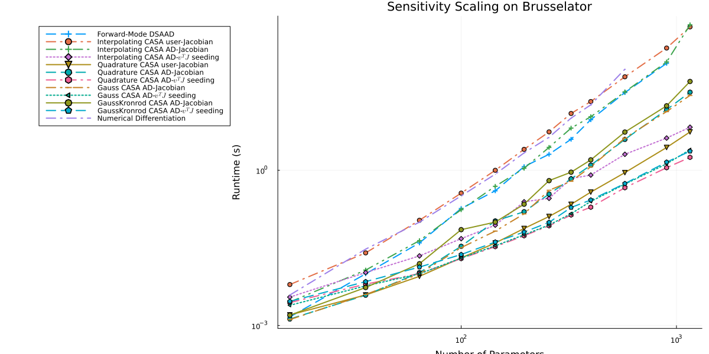
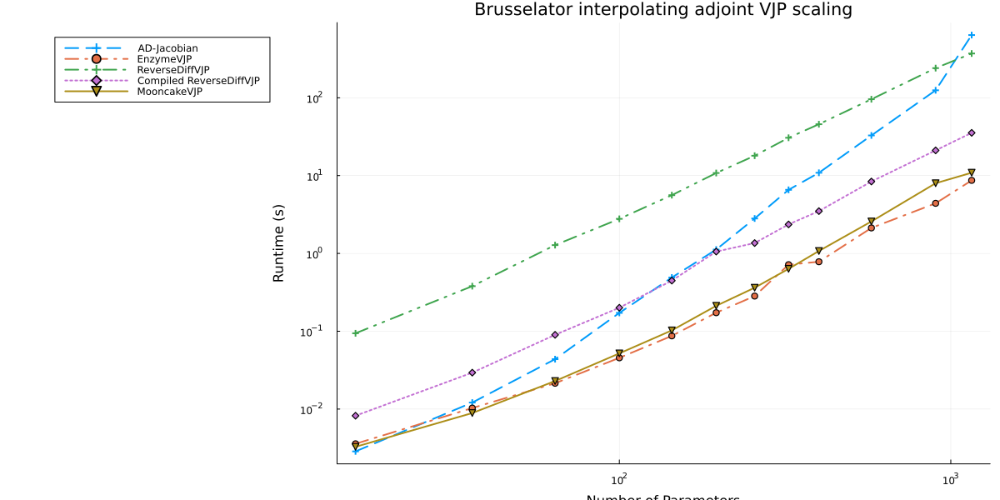
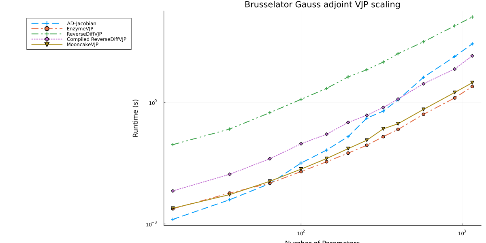
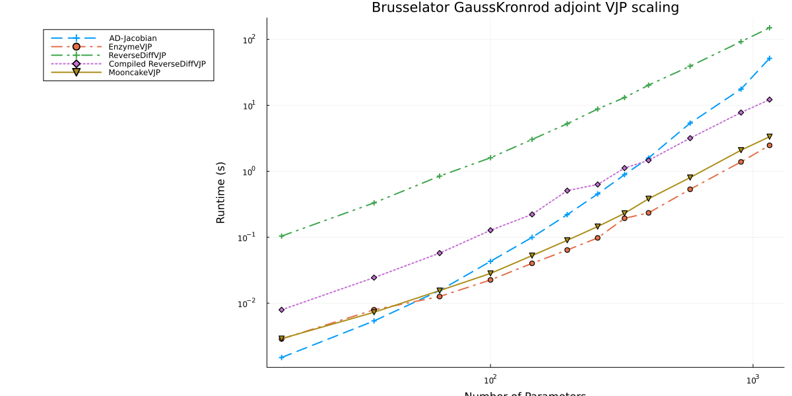
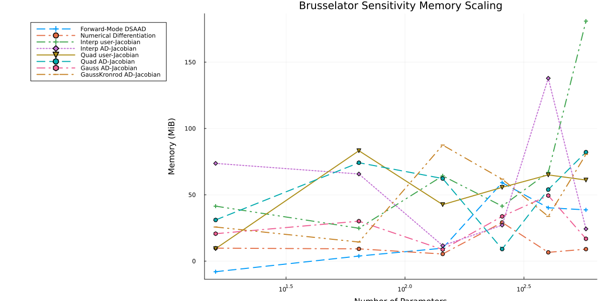

Bruss Scaling PDE Differentaition Benchmarks
From the paper A Comparison of Automatic Differentiation and Continuous Sensitivity Analysis for Derivatives of Differential Equation Solutions
using OrdinaryDiffEq, ReverseDiff, ForwardDiff, FiniteDiff, SciMLSensitivity
using LinearAlgebra, Tracker, Mooncake, Plotsfunction makebrusselator(N = 8)
xyd_brusselator = range(0, stop = 1, length = N)
function limit(a, N)
if a == N+1
return 1
elseif a == 0
return N
else
return a
end
end
brusselator_f(x, y, t) = ifelse(
(((x-0.3)^2 + (y-0.6)^2) <= 0.1^2) &&
(t >= 1.1), 5.0, 0.0)
brusselator_2d_loop = let N=N, xyd=xyd_brusselator, dx=step(xyd_brusselator)
function brusselator_2d_loop(du, u, p, t)
@inbounds begin
ii1 = N^2
ii2 = ii1+N^2
ii3 = ii2+2(N^2)
A = @view p[1:ii1]
B = @view p[(ii1 + 1):ii2]
α = @view p[(ii2 + 1):ii3]
II = LinearIndices((N, N, 2))
for I in CartesianIndices((N, N))
x = xyd[I[1]]
y = xyd[I[2]]
i = I[1]
j = I[2]
ip1 = limit(i+1, N);
im1 = limit(i-1, N)
jp1 = limit(j+1, N);
jm1 = limit(j-1, N)
du[II[i, j, 1]] = α[II[
i, j, 1]]*(u[II[im1, j, 1]] + u[II[ip1, j, 1]] +
u[II[i, jp1, 1]] + u[II[i, jm1, 1]] -
4u[II[i, j, 1]])/dx^2 +
B[II[i, j, 1]] + u[II[i, j, 1]]^2*u[II[i, j, 2]] -
(A[II[i, j, 1]] + 1)*u[II[i, j, 1]] +
brusselator_f(x, y, t)
end
for I in CartesianIndices((N, N))
i = I[1]
j = I[2]
ip1 = limit(i+1, N)
im1 = limit(i-1, N)
jp1 = limit(j+1, N)
jm1 = limit(j-1, N)
du[II[i, j, 2]] = α[II[
i, j, 2]]*(u[II[im1, j, 2]] + u[II[ip1, j, 2]] + u[II[i, jp1, 2]] +
u[II[i, jm1, 2]] - 4u[II[i, j, 2]])/dx^2 +
A[II[i, j, 1]]*u[II[i, j, 1]] -
u[II[i, j, 1]]^2*u[II[i, j, 2]]
end
return nothing
end
end
end
function init_brusselator_2d(xyd)
N = length(xyd)
u = zeros(N, N, 2)
for I in CartesianIndices((N, N))
x = xyd[I[1]]
y = xyd[I[2]]
u[I, 1] = 22*(y*(1-y))^(3/2)
u[I, 2] = 27*(x*(1-x))^(3/2)
end
vec(u)
end
dx = step(xyd_brusselator)
e1 = ones(N-1)
off = N-1
e4 = ones(N-off)
T = diagm(0=>-2ones(N), -1=>e1, 1=>e1, off=>e4, -off=>e4) ./ dx^2
Ie = Matrix{Float64}(I, N, N)
# A + df/du
Op = kron(Ie, T) + kron(T, Ie)
brusselator_jac = let N=N
(J, a, p, t) -> begin
ii1 = N^2
ii2 = ii1+N^2
ii3 = ii2+2(N^2)
A = @view p[1:ii1]
B = @view p[(ii1 + 1):ii2]
α = @view p[(ii2 + 1):ii3]
u = @view a[1:(end ÷ 2)]
v = @view a[(end ÷ 2 + 1):end]
N2 = length(a)÷2
α1 = @view α[1:(end ÷ 2)]
α2 = @view α[(end ÷ 2 + 1):end]
fill!(J, 0)
J[1:N2, 1:N2] .= α1 .* Op
J[(N2 + 1):end, (N2 + 1):end] .= α2 .* Op
J1 = @view J[1:N2, 1:N2]
J2 = @view J[(N2 + 1):end, 1:N2]
J3 = @view J[1:N2, (N2 + 1):end]
J4 = @view J[(N2 + 1):end, (N2 + 1):end]
J1[diagind(J1)] .+= @. 2u*v-(A+1)
J2[diagind(J2)] .= @. A-2u*v
J3[diagind(J3)] .= @. u^2
J4[diagind(J4)] .+= @. -u^2
nothing
end
end
Jmat = zeros(2N*N, 2N*N)
dp = zeros(2N*N, 4N*N)
brusselator_comp = let N=N, xyd=xyd_brusselator, dx=step(xyd_brusselator), Jmat=Jmat,
dp=dp, brusselator_jac=brusselator_jac
function brusselator_comp(dus, us, p, t)
@inbounds begin
ii1 = N^2
ii2 = ii1+N^2
ii3 = ii2+2(N^2)
@views u, s = us[1:ii2], us[(ii2 + 1):end]
du = @view dus[1:ii2]
ds = @view dus[(ii2 + 1):end]
fill!(dp, 0)
A = @view p[1:ii1]
B = @view p[(ii1 + 1):ii2]
α = @view p[(ii2 + 1):ii3]
dfdα = @view dp[:, (ii2 + 1):ii3]
diagind(dfdα)
for i in 1:ii1
dp[i, ii1 + i] = 1
end
II = LinearIndices((N, N, 2))
uu = @view u[1:(end ÷ 2)]
for i in eachindex(uu)
dp[i, i] = -uu[i]
dp[i + ii1, i] = uu[i]
end
for I in CartesianIndices((N, N))
x = xyd[I[1]]
y = xyd[I[2]]
i = I[1]
j = I[2]
ip1 = limit(i+1, N);
im1 = limit(i-1, N)
jp1 = limit(j+1, N);
jm1 = limit(j-1, N)
au = dfdα[II[i, j, 1], II[i, j, 1]] = (u[II[im1, j, 1]] +
u[II[ip1, j, 1]] +
u[II[i, jp1, 1]] +
u[II[i, jm1, 1]] -
4u[II[i, j, 1]])/dx^2
du[II[i, j, 1]] = α[II[i, j, 1]]*(au) + B[II[i, j, 1]] +
u[II[i, j, 1]]^2*u[II[i, j, 2]] -
(A[II[i, j, 1]] + 1)*u[II[i, j, 1]] +
brusselator_f(x, y, t)
end
for I in CartesianIndices((N, N))
i = I[1]
j = I[2]
ip1 = limit(i+1, N)
im1 = limit(i-1, N)
jp1 = limit(j+1, N)
jm1 = limit(j-1, N)
av = dfdα[II[i, j, 2], II[i, j, 2]] = (u[II[im1, j, 2]] +
u[II[ip1, j, 2]] +
u[II[i, jp1, 2]] +
u[II[i, jm1, 2]] -
4u[II[i, j, 2]])/dx^2
du[II[i, j, 2]] = α[II[i, j, 2]]*(av) + A[II[i, j, 1]]*u[II[i, j, 1]] -
u[II[i, j, 1]]^2*u[II[i, j, 2]]
end
brusselator_jac(Jmat, u, p, t)
BLAS.gemm!('N', 'N', 1.0, Jmat, reshape(s, 2N*N, 4N*N), 1.0, dp)
copyto!(ds, vec(dp))
return nothing
end
end
end
u0 = init_brusselator_2d(xyd_brusselator)
p = [fill(3.4, N^2); fill(1.0, N^2); fill(10.0, 2*N^2)]
brusselator_2d_loop, u0,
p,
brusselator_jac,
ODEProblem(brusselator_comp, copy([u0; zeros((N^2*2)*(N^2*4))]), (0.0, 10.0), p)
end
Base.eps(::Type{Tracker.TrackedReal{T}}) where {T} = eps(T)
Base.vec(v::Adjoint{<:Real, <:AbstractVector}) = vec(v') # bad bad hackSetup AutoDiff
bt = 0:0.1:1
tspan = (0.0, 1.0)
forwarddiffn = vcat(2:10, 12, 15)
reversediffn = 2:10
numdiffn = vcat(2:10, 12)
csan = vcat(2:10, 12, 15, 17)
#csaseedn = 2:10
tols = (abstol = 1e-5, reltol = 1e-7)
@isdefined(PROBS) || (const PROBS = Dict{Int, Any}())
makebrusselator!(dict, n) = get!(()->makebrusselator(n), dict, n)
_adjoint_methods_iq = ntuple(2) do ii
Alg = (InterpolatingAdjoint, QuadratureAdjoint)[ii]
(
user = Alg(autodiff = false, autojacvec = false), # user Jacobian
adjc = Alg(autodiff = true, autojacvec = false), # AD Jacobian
advj = Alg(autodiff = true, autojacvec = EnzymeVJP()) # AD vJ
)
end |> NamedTuple{(:interp, :quad)}
# GaussAdjoint/GaussKronrodAdjoint do not support user-provided Jacobians (autodiff=false)
_adjoint_methods_g = ntuple(2) do ii
Alg = (GaussAdjoint, GaussKronrodAdjoint)[ii]
(
adjc = Alg(autodiff = true, autojacvec = false), # AD Jacobian
advj = Alg(autodiff = true, autojacvec = EnzymeVJP()) # AD vJ
)
end |> NamedTuple{(:gauss, :gausskronrod)}
@isdefined(ADJOINT_METHODS_IQ) ||
(const ADJOINT_METHODS_IQ = mapreduce(collect, vcat, _adjoint_methods_iq))
@isdefined(ADJOINT_METHODS_G) ||
(const ADJOINT_METHODS_G = mapreduce(collect, vcat, _adjoint_methods_g))
function auto_sen_l2(
f, u0, tspan, p, t, alg = Tsit5(); diffalg = ReverseDiff.gradient, kwargs...)
test_f(p) = begin
prob = ODEProblem{true, SciMLBase.FullSpecialize}(f, convert.(eltype(p), u0), tspan, p)
sol = solve(prob, alg, saveat = t; kwargs...)
sum(sol.u) do x
sum(z->(1-z)^2/2, x)
end
end
diffalg(test_f, p)
end
@inline function diffeq_sen_l2(df, u0, tspan, p, t, alg = Tsit5();
abstol = 1e-5, reltol = 1e-7, iabstol = abstol, ireltol = reltol,
sensalg = SensitivityAlg(), kwargs...)
prob = ODEProblem{true, SciMLBase.FullSpecialize}(df, u0, tspan, p)
saveat = tspan[1] != t[1] && tspan[end] != t[end] ? vcat(tspan[1], t, tspan[end]) : t
sol = solve(prob, alg, abstol = abstol, reltol = reltol, saveat = saveat; kwargs...)
dg(out, u, p, t, i) = (out.=u .- 1.0)
adjoint_sensitivities(sol, alg; t, abstol = abstol, dgdu_discrete = dg,
reltol = reltol, sensealg = sensalg)
enddiffeq_sen_l2 (generic function with 2 methods)AD Choice Benchmarks
forwarddiff = map(forwarddiffn) do n
bfun, b_u0, b_p, brusselator_jac, brusselator_comp = makebrusselator!(PROBS, n)
@elapsed auto_sen_l2(
bfun, b_u0, tspan, b_p, bt, (Rodas5()); diffalg = (ForwardDiff.gradient), tols...)
t = @elapsed auto_sen_l2(
bfun, b_u0, tspan, b_p, bt, (Rodas5()); diffalg = (ForwardDiff.gradient), tols...)
@show n, t
t
end(n, t) = (2, 0.002038054)
(n, t) = (3, 0.024346857)
(n, t) = (4, 0.360912293)
(n, t) = (5, 0.407026775)
(n, t) = (6, 1.13027963)
(n, t) = (7, 3.514115141)
(n, t) = (8, 10.614822327)
(n, t) = (9, 14.117503352)
(n, t) = (10, 28.119489972)
(n, t) = (12, 102.733934305)
(n, t) = (15, 862.757535783)
11-element Vector{Float64}:
0.002038054
0.024346857
0.360912293
0.407026775
1.13027963
3.514115141
10.614822327
14.117503352
28.119489972
102.733934305
862.757535783#=
reversediff = map(reversediffn) do n
bfun, b_u0, b_p, brusselator_jac, brusselator_comp = makebrusselator!(PROBS, n)
@elapsed auto_sen_l2(bfun, b_u0, tspan, b_p, bt, (Rodas5(autodiff=false)); diffalg=(ReverseDiff.gradient), tols...)
t = @elapsed auto_sen_l2(bfun, b_u0, tspan, b_p, bt, (Rodas5(autodiff=false)); diffalg=(ReverseDiff.gradient), tols...)
@show n,t
t
end
=#numdiff = map(numdiffn) do n
bfun, b_u0, b_p, brusselator_jac, brusselator_comp = makebrusselator!(PROBS, n)
@elapsed auto_sen_l2(bfun, b_u0, tspan, b_p, bt, (Rodas5());
diffalg = (FiniteDiff.finite_difference_gradient), tols...)
t = @elapsed auto_sen_l2(bfun, b_u0, tspan, b_p, bt, (Rodas5());
diffalg = (FiniteDiff.finite_difference_gradient), tols...)
@show n, t
t
end(n, t) = (2, 0.004313607)
(n, t) = (3, 0.039786149)
(n, t) = (4, 0.139324496)
(n, t) = (5, 0.446542629)
(n, t) = (6, 1.120352768)
(n, t) = (7, 2.41965141)
(n, t) = (8, 16.581140413)
(n, t) = (9, 37.947692331)
(n, t) = (10, 66.40642075)
(n, t) = (12, 207.122743611)
10-element Vector{Float64}:
0.004313607
0.039786149
0.139324496
0.446542629
1.120352768
2.41965141
16.581140413
37.947692331
66.40642075
207.122743611Warmup: run each adjoint method once at the smallest size to ensure all compilation is complete before we start timing.
let n = first(csan)
bfun, b_u0, b_p, brusselator_jac, brusselator_comp = makebrusselator!(PROBS, n)
solver = Rodas5(autodiff = false)
for alg in ADJOINT_METHODS_IQ
f = SciMLSensitivity.alg_autodiff(alg) ? bfun :
ODEFunction(bfun, jac = brusselator_jac)
diffeq_sen_l2(f, b_u0, tspan, b_p, bt, solver; sensalg = alg, tols...)
end
for alg in ADJOINT_METHODS_G
diffeq_sen_l2(bfun, b_u0, tspan, b_p, bt, solver; sensalg = alg, tols...)
end
endcsa_iq = map(csan) do n
bfun, b_u0, b_p, brusselator_jac, brusselator_comp = makebrusselator!(PROBS, n)
@time ts = map(ADJOINT_METHODS_IQ) do alg
@info "Running $alg"
f = SciMLSensitivity.alg_autodiff(alg) ? bfun :
ODEFunction(bfun, jac = brusselator_jac)
solver = Rodas5(autodiff = false)
@time diffeq_sen_l2(f, b_u0, tspan, b_p, bt, solver; sensalg = alg, tols...)
t = @elapsed diffeq_sen_l2(f, b_u0, tspan, b_p, bt, solver; sensalg = alg, tols...)
return t
end
@show n, ts
ts
end0.006202 seconds (12.90 k allocations: 950.062 KiB)
0.003670 seconds (10.97 k allocations: 838.234 KiB)
0.003199 seconds (6.28 k allocations: 976.500 KiB)
0.002150 seconds (5.36 k allocations: 389.234 KiB)
0.001782 seconds (4.07 k allocations: 294.672 KiB)
0.002058 seconds (6.78 k allocations: 668.500 KiB)
0.828470 seconds (1.03 M allocations: 76.137 MiB, 94.71% compilation time
)
(n, ts) = (2, [0.006016855, 0.003311215, 0.002934918, 0.001831637, 0.001463
859, 0.001733227])
0.025902 seconds (18.72 k allocations: 2.246 MiB)
19.287869 seconds (4.80 M allocations: 325.878 MiB, 0.38% gc time, 99.90%
compilation time)
0.006082 seconds (8.44 k allocations: 2.089 MiB)
0.004640 seconds (6.74 k allocations: 832.625 KiB)
7.692886 seconds (3.78 M allocations: 261.031 MiB, 1.29% gc time, 99.88%
compilation time)
0.002996 seconds (7.87 k allocations: 1.062 MiB)
27.125199 seconds (8.68 M allocations: 602.166 MiB, 0.79% gc time, 99.36%
compilation time)
(n, ts) = (3, [0.068054693, 0.013749385, 0.005887385, 0.004496705, 0.004040
539, 0.002840438])
0.111547 seconds (30.31 k allocations: 5.617 MiB)
20.526863 seconds (4.81 M allocations: 328.718 MiB, 0.26% gc time, 99.72%
compilation time)
0.013314 seconds (13.09 k allocations: 4.943 MiB)
0.010847 seconds (9.03 k allocations: 1.721 MiB)
9.894100 seconds (3.78 M allocations: 261.733 MiB, 1.17% gc time, 99.83%
compilation time)
0.005825 seconds (9.71 k allocations: 1.804 MiB)
30.773304 seconds (8.75 M allocations: 624.877 MiB, 0.55% gc time, 98.61%
compilation time)
(n, ts) = (4, [0.111662112, 0.053016187, 0.01303248, 0.010715878, 0.0118245
42, 0.005548789])
0.685573 seconds (44.47 k allocations: 11.983 MiB)
19.704174 seconds (4.22 M allocations: 295.820 MiB, 0.34% gc time, 98.28%
compilation time)
0.067901 seconds (18.81 k allocations: 10.368 MiB)
0.039187 seconds (12.13 k allocations: 3.424 MiB)
8.972365 seconds (3.78 M allocations: 262.783 MiB, 0.50% gc time, 99.49%
compilation time)
0.008874 seconds (12.20 k allocations: 3.155 MiB)
30.733578 seconds (8.22 M allocations: 629.304 MiB, 0.60% gc time, 92.06%
compilation time)
(n, ts) = (5, [0.685326446, 0.335313521, 0.141372276, 0.038853792, 0.038968
932, 0.008633456])
1.419543 seconds (61.65 k allocations: 23.606 MiB)
21.845150 seconds (4.23 M allocations: 305.369 MiB, 0.48% gc time, 97.20%
compilation time)
0.101989 seconds (25.70 k allocations: 19.800 MiB)
0.051989 seconds (15.54 k allocations: 6.511 MiB)
11.390189 seconds (3.78 M allocations: 264.938 MiB, 0.38% gc time, 99.03%
compilation time)
0.014236 seconds (14.93 k allocations: 5.270 MiB)
36.827136 seconds (8.31 M allocations: 705.295 MiB, 0.40% gc time, 88.28%
compilation time)
(n, ts) = (6, [1.11600157, 0.604818808, 0.105900167, 0.05133269, 0.10546987
, 0.014001886])
2.909712 seconds (85.16 k allocations: 43.958 MiB, 1.47% gc time)
23.127137 seconds (3.65 M allocations: 285.043 MiB, 93.56% compilation tim
e)
0.296164 seconds (35.11 k allocations: 37.172 MiB, 22.08% gc time)
0.106559 seconds (19.57 k allocations: 10.920 MiB)
1.956530 seconds (297.39 k allocations: 26.692 MiB, 90.01% compilation ti
me)
0.023909 seconds (18.16 k allocations: 8.466 MiB)
33.317848 seconds (4.34 M allocations: 558.139 MiB, 0.32% gc time, 70.23%
compilation time)
(n, ts) = (7, [2.875707962, 1.495518397, 0.19591277, 0.107283017, 0.1934521
09, 0.023231578])
6.160003 seconds (109.48 k allocations: 73.645 MiB)
3.452897 seconds (87.69 k allocations: 62.066 MiB)
0.426403 seconds (44.84 k allocations: 61.664 MiB, 9.26% gc time)
0.253442 seconds (24.97 k allocations: 18.519 MiB)
0.601509 seconds (15.90 k allocations: 13.675 MiB)
0.080217 seconds (22.48 k allocations: 13.599 MiB)
21.987975 seconds (612.15 k allocations: 486.577 MiB, 0.48% gc time)
(n, ts) = (8, [6.263258536, 3.459824058, 0.343587368, 0.244928897, 0.597727
126, 0.096760824])
12.910660 seconds (142.00 k allocations: 119.495 MiB, 0.07% gc time)
7.843182 seconds (121.67 k allocations: 104.006 MiB)
0.766767 seconds (61.84 k allocations: 103.098 MiB)
0.541826 seconds (30.42 k allocations: 29.385 MiB)
1.557744 seconds (19.17 k allocations: 21.647 MiB)
0.160935 seconds (26.84 k allocations: 20.817 MiB)
48.413323 seconds (805.30 k allocations: 797.138 MiB, 0.30% gc time)
(n, ts) = (9, [12.89008617, 8.675286274, 0.79419784, 0.536920944, 1.5604199
87, 0.158973933])
24.580668 seconds (173.85 k allocations: 177.456 MiB, 0.21% gc time)
13.745905 seconds (139.19 k allocations: 148.371 MiB, 1.26% gc time)
0.857541 seconds (70.60 k allocations: 146.135 MiB, 1.28% gc time)
0.762139 seconds (36.50 k allocations: 43.825 MiB)
2.858015 seconds (22.82 k allocations: 32.313 MiB)
0.234287 seconds (31.70 k allocations: 30.308 MiB, 4.62% gc time)
85.149924 seconds (950.74 k allocations: 1.130 GiB, 0.39% gc time)
(n, ts) = (10, [24.892908547, 13.062746803, 0.827115371, 0.89424622, 2.2133
76721, 0.196055486])
71.446720 seconds (256.54 k allocations: 370.194 MiB, 0.13% gc time)
41.181211 seconds (205.34 k allocations: 309.939 MiB, 0.15% gc time)
1.450802 seconds (103.68 k allocations: 303.808 MiB, 0.35% gc time)
2.276681 seconds (50.59 k allocations: 88.514 MiB, 15.43% gc time)
6.371547 seconds (31.27 k allocations: 65.751 MiB)
0.389452 seconds (42.97 k allocations: 59.668 MiB)
246.909516 seconds (1.38 M allocations: 2.340 GiB, 0.64% gc time)
(n, ts) = (12, [71.734870186, 40.977315292, 1.475568443, 1.894287001, 7.290
927857, 0.406592896])
264.686092 seconds (397.51 k allocations: 909.305 MiB, 0.33% gc time)
170.907118 seconds (350.79 k allocations: 799.431 MiB, 0.07% gc time)
3.225759 seconds (170.98 k allocations: 767.125 MiB, 1.26% gc time)
6.190448 seconds (76.52 k allocations: 218.971 MiB, 0.14% gc time)
24.157767 seconds (46.83 k allocations: 161.755 MiB, 0.28% gc time)
1.243616 seconds (63.71 k allocations: 143.222 MiB, 3.97% gc time)
940.218841 seconds (2.21 M allocations: 5.859 GiB, 0.26% gc time)
(n, ts) = (15, [264.066042038, 170.675622602, 3.121666196, 6.391597047, 24.
440201808, 1.096048098])
581.403860 seconds (526.33 k allocations: 1.481 GiB, 0.20% gc time)
316.905137 seconds (393.25 k allocations: 1.192 GiB, 0.33% gc time)
4.879372 seconds (197.65 k allocations: 1.160 GiB, 0.89% gc time)
12.389451 seconds (97.00 k allocations: 357.023 MiB, 0.41% gc time)
48.910243 seconds (59.12 k allocations: 267.234 MiB)
1.507755 seconds (80.10 k allocations: 234.334 MiB, 2.30% gc time)
1928.550745 seconds (2.71 M allocations: 9.345 GiB, 0.15% gc time)
(n, ts) = (17, [579.750552815, 315.054081749, 4.853553916, 12.485781103, 48
.935372072, 1.456237126])
12-element Vector{Vector{Float64}}:
[0.006016855, 0.003311215, 0.002934918, 0.001831637, 0.001463859, 0.001733
227]
[0.068054693, 0.013749385, 0.005887385, 0.004496705, 0.004040539, 0.002840
438]
[0.111662112, 0.053016187, 0.01303248, 0.010715878, 0.011824542, 0.0055487
89]
[0.685326446, 0.335313521, 0.141372276, 0.038853792, 0.038968932, 0.008633
456]
[1.11600157, 0.604818808, 0.105900167, 0.05133269, 0.10546987, 0.014001886
]
[2.875707962, 1.495518397, 0.19591277, 0.107283017, 0.193452109, 0.0232315
78]
[6.263258536, 3.459824058, 0.343587368, 0.244928897, 0.597727126, 0.096760
824]
[12.89008617, 8.675286274, 0.79419784, 0.536920944, 1.560419987, 0.1589739
33]
[24.892908547, 13.062746803, 0.827115371, 0.89424622, 2.213376721, 0.19605
5486]
[71.734870186, 40.977315292, 1.475568443, 1.894287001, 7.290927857, 0.4065
92896]
[264.066042038, 170.675622602, 3.121666196, 6.391597047, 24.440201808, 1.0
96048098]
[579.750552815, 315.054081749, 4.853553916, 12.485781103, 48.935372072, 1.
456237126]csa_g = map(csan) do n
bfun, b_u0, b_p, brusselator_jac, brusselator_comp = makebrusselator!(PROBS, n)
@time ts = map(ADJOINT_METHODS_G) do alg
@info "Running $alg"
solver = Rodas5(autodiff = false)
@time diffeq_sen_l2(bfun, b_u0, tspan, b_p, bt, solver; sensalg = alg, tols...)
t = @elapsed diffeq_sen_l2(bfun, b_u0, tspan, b_p, bt, solver; sensalg = alg, tols...)
return t
end
@show n, ts
ts
end0.002534 seconds (4.94 k allocations: 356.656 KiB)
0.002631 seconds (5.38 k allocations: 621.141 KiB)
0.002529 seconds (7.46 k allocations: 441.141 KiB)
0.002836 seconds (7.51 k allocations: 738.625 KiB)
0.497013 seconds (560.39 k allocations: 40.860 MiB, 95.31% compilation ti
me)
(n, ts) = (2, [0.001538188, 0.002003856, 0.001829177, 0.002253344])
8.783318 seconds (4.79 M allocations: 329.256 MiB, 0.87% gc time, 99.85%
compilation time)
0.004215 seconds (6.14 k allocations: 1.099 MiB)
8.367628 seconds (4.35 M allocations: 302.457 MiB, 1.31% gc time, 99.85%
compilation time)
0.004398 seconds (11.92 k allocations: 1.430 MiB)
17.182473 seconds (9.20 M allocations: 638.842 MiB, 1.09% gc time, 99.67%
compilation time)
(n, ts) = (3, [0.004872994, 0.003775152, 0.006342054, 0.004233749])
11.708825 seconds (4.79 M allocations: 330.097 MiB, 0.66% gc time, 99.84%
compilation time)
0.006568 seconds (7.82 k allocations: 2.119 MiB)
11.143939 seconds (4.33 M allocations: 301.631 MiB, 0.63% gc time, 99.78%
compilation time)
0.007889 seconds (16.74 k allocations: 2.660 MiB)
22.916533 seconds (9.21 M allocations: 645.676 MiB, 0.64% gc time, 99.53%
compilation time)
(n, ts) = (4, [0.012545339, 0.006340354, 0.018864843, 0.007692214])
9.165312 seconds (3.61 M allocations: 252.472 MiB, 99.54% compilation tim
e)
0.011384 seconds (9.95 k allocations: 4.073 MiB)
9.488563 seconds (3.90 M allocations: 272.367 MiB, 0.64% gc time, 99.38%
compilation time)
0.012676 seconds (18.46 k allocations: 4.638 MiB)
18.796508 seconds (7.61 M allocations: 550.643 MiB, 0.32% gc time, 98.71%
compilation time)
(n, ts) = (5, [0.037376607, 0.011259218, 0.054019996, 0.01240231])
12.183766 seconds (3.64 M allocations: 258.231 MiB, 0.76% gc time, 99.16%
compilation time)
0.019273 seconds (12.35 k allocations: 7.463 MiB)
12.490328 seconds (3.89 M allocations: 274.458 MiB, 0.90% gc time, 98.85%
compilation time)
0.020920 seconds (23.93 k allocations: 8.291 MiB)
24.991762 seconds (7.65 M allocations: 580.233 MiB, 0.82% gc time, 97.75%
compilation time)
(n, ts) = (6, [0.097107962, 0.018932263, 0.136257937, 0.020817978])
10.420769 seconds (3.52 M allocations: 255.001 MiB, 98.18% compilation tim
e)
0.031343 seconds (15.13 k allocations: 12.913 MiB)
10.769785 seconds (3.84 M allocations: 276.352 MiB, 0.54% gc time, 97.38%
compilation time)
0.034073 seconds (29.79 k allocations: 14.044 MiB)
21.790326 seconds (7.52 M allocations: 613.510 MiB, 0.27% gc time, 95.08%
compilation time)
(n, ts) = (7, [0.185455149, 0.03298662, 0.277630506, 0.034148831])
0.556161 seconds (17.93 k allocations: 21.923 MiB)
0.126917 seconds (18.38 k allocations: 21.279 MiB)
0.748813 seconds (83.23 k allocations: 25.142 MiB)
0.126716 seconds (36.93 k allocations: 22.856 MiB)
3.164583 seconds (313.84 k allocations: 182.562 MiB, 1.37% gc time)
(n, ts) = (8, [0.5570044, 0.126670997, 0.791406742, 0.126547498])
1.060758 seconds (21.51 k allocations: 34.909 MiB)
0.202923 seconds (22.06 k allocations: 33.402 MiB)
1.463968 seconds (117.99 k allocations: 39.784 MiB)
0.204535 seconds (42.87 k allocations: 35.347 MiB)
5.866650 seconds (409.73 k allocations: 287.046 MiB)
(n, ts) = (9, [1.070029381, 0.202833552, 1.453577656, 0.202833212])
2.100212 seconds (26.60 k allocations: 53.342 MiB, 6.04% gc time)
0.300669 seconds (27.94 k allocations: 51.018 MiB)
2.562578 seconds (141.07 k allocations: 59.220 MiB)
0.318458 seconds (49.70 k allocations: 53.246 MiB)
10.460931 seconds (491.51 k allocations: 433.815 MiB, 1.28% gc time)
(n, ts) = (10, [1.976738112, 0.301497472, 2.57235065, 0.323021296])
5.986259 seconds (37.58 k allocations: 110.775 MiB)
0.676710 seconds (36.92 k allocations: 103.043 MiB)
7.702051 seconds (246.95 k allocations: 121.791 MiB)
0.723448 seconds (62.10 k allocations: 106.140 MiB, 3.71% gc time)
30.290983 seconds (768.00 k allocations: 883.659 MiB, 0.21% gc time)
(n, ts) = (12, [6.023313064, 0.715914872, 7.755967637, 0.697881122])
25.509936 seconds (65.76 k allocations: 284.738 MiB, 0.17% gc time)
1.535916 seconds (56.98 k allocations: 256.956 MiB, 2.35% gc time)
31.230957 seconds (418.12 k allocations: 303.745 MiB)
1.917882 seconds (89.60 k allocations: 262.210 MiB, 2.41% gc time)
120.025847 seconds (1.26 M allocations: 2.164 GiB, 0.15% gc time)
(n, ts) = (15, [25.429193122, 1.45746745, 31.444571105, 1.489528931])
42.156046 seconds (66.59 k allocations: 452.073 MiB, 0.01% gc time)
2.453908 seconds (71.83 k allocations: 422.756 MiB, 0.25% gc time)
51.043496 seconds (574.65 k allocations: 479.595 MiB, 0.08% gc time)
2.140081 seconds (107.12 k allocations: 429.493 MiB, 1.14% gc time)
195.413821 seconds (1.64 M allocations: 3.484 GiB, 0.10% gc time)
(n, ts) = (17, [42.295492582, 2.119564518, 51.15021485, 2.046119063])
12-element Vector{Vector{Float64}}:
[0.001538188, 0.002003856, 0.001829177, 0.002253344]
[0.004872994, 0.003775152, 0.006342054, 0.004233749]
[0.012545339, 0.006340354, 0.018864843, 0.007692214]
[0.037376607, 0.011259218, 0.054019996, 0.01240231]
[0.097107962, 0.018932263, 0.136257937, 0.020817978]
[0.185455149, 0.03298662, 0.277630506, 0.034148831]
[0.5570044, 0.126670997, 0.791406742, 0.126547498]
[1.070029381, 0.202833552, 1.453577656, 0.202833212]
[1.976738112, 0.301497472, 2.57235065, 0.323021296]
[6.023313064, 0.715914872, 7.755967637, 0.697881122]
[25.429193122, 1.45746745, 31.444571105, 1.489528931]
[42.295492582, 2.119564518, 51.15021485, 2.046119063]n_to_param(n) = 4n^2
lw = 2
ms = 0.5
plt1 = plot(title = "Sensitivity Scaling on Brusselator");
plot!(plt1, n_to_param.(forwarddiffn), forwarddiff, lab = "Forward-Mode DSAAD",
lw = lw, marksize = ms, linestyle = :auto, marker = :auto);
#plot!(plt1, n_to_param.(reversediffn), reversediff, lab="Reverse-Mode DSAAD", lw=lw, marksize=ms, linestyle=:auto, marker=:auto);
csadata_iq = [[csa_iq[j][i] for j in eachindex(csa_iq)] for i in eachindex(csa_iq[1])]
csadata_g = [[csa_g[j][i] for j in eachindex(csa_g)] for i in eachindex(csa_g[1])]
plot!(plt1, n_to_param.(csan), csadata_iq[1], lab = "Interpolating CASA user-Jacobian",
lw = lw, marksize = ms, linestyle = :auto, marker = :auto);
plot!(plt1, n_to_param.(csan), csadata_iq[2], lab = "Interpolating CASA AD-Jacobian",
lw = lw, marksize = ms, linestyle = :auto, marker = :auto);
plot!(
plt1, n_to_param.(csan), csadata_iq[3], lab = raw"Interpolating CASA AD-$v^{T}J$ seeding",
lw = lw, marksize = ms, linestyle = :auto, marker = :auto);
plot!(plt1, n_to_param.(csan), csadata_iq[1 + 3], lab = "Quadrature CASA user-Jacobian",
lw = lw, marksize = ms, linestyle = :auto, marker = :auto);
plot!(plt1, n_to_param.(csan), csadata_iq[2 + 3], lab = "Quadrature CASA AD-Jacobian",
lw = lw, marksize = ms, linestyle = :auto, marker = :auto);
plot!(
plt1, n_to_param.(csan), csadata_iq[3 + 3], lab = raw"Quadrature CASA AD-$v^{T}J$ seeding",
lw = lw, marksize = ms, linestyle = :auto, marker = :auto);
plot!(plt1, n_to_param.(csan), csadata_g[1], lab = "Gauss CASA AD-Jacobian",
lw = lw, marksize = ms, linestyle = :auto, marker = :auto);
plot!(
plt1, n_to_param.(csan), csadata_g[2], lab = raw"Gauss CASA AD-$v^{T}J$ seeding",
lw = lw, marksize = ms, linestyle = :auto, marker = :auto);
plot!(plt1, n_to_param.(csan), csadata_g[1 + 2], lab = "GaussKronrod CASA AD-Jacobian",
lw = lw, marksize = ms, linestyle = :auto, marker = :auto);
plot!(
plt1, n_to_param.(csan), csadata_g[2 + 2], lab = raw"GaussKronrod CASA AD-$v^{T}J$ seeding",
lw = lw, marksize = ms, linestyle = :auto, marker = :auto);
plot!(plt1, n_to_param.(numdiffn), numdiff, lab = "Numerical Differentiation",
lw = lw, marksize = ms, linestyle = :auto, marker = :auto);
xaxis!(plt1, "Number of Parameters", :log10);
yaxis!(plt1, "Runtime (s)", :log10);
plot!(plt1, legend = :outertopleft, size = (1200, 600))
VJP Choice Benchmarks
bt = 0:0.1:1
tspan = (0.0, 1.0)
csan = vcat(2:10, 12, 15, 17)
tols = (abstol = 1e-5, reltol = 1e-7)
_adjoint_methods = ntuple(4) do ii
Alg = (InterpolatingAdjoint, QuadratureAdjoint, GaussAdjoint, GaussKronrodAdjoint)[ii]
(
advj1 = Alg(autodiff = true, autojacvec = EnzymeVJP()), # AD vJ (Enzyme)
advj2 = Alg(autodiff = true, autojacvec = ReverseDiffVJP(false)), # AD vJ (ReverseDiff)
advj3 = Alg(autodiff = true, autojacvec = ReverseDiffVJP(true)), # AD vJ (Compiled ReverseDiff)
advj4 = Alg(autodiff = true, autojacvec = SciMLSensitivity.MooncakeVJP()) # AD vJ (Mooncake)
)
end |> NamedTuple{(:interp, :quad, :gauss, :gausskronrod)}
adjoint_methods = mapreduce(collect, vcat, _adjoint_methods)16-element Vector{SciMLBase.AbstractAdjointSensitivityAlgorithm{0, true, Va
l{:central}}}:
SciMLSensitivity.InterpolatingAdjoint{0, true, Val{:central}, SciMLSensiti
vity.EnzymeVJP{EnzymeCore.ReverseMode{false, false, false, EnzymeCore.FFIAB
I, false, false}}}(SciMLSensitivity.EnzymeVJP{EnzymeCore.ReverseMode{false,
false, false, EnzymeCore.FFIABI, false, false}}(0, EnzymeCore.ReverseMode{
false, false, false, EnzymeCore.FFIABI, false, false}()), false, false)
SciMLSensitivity.InterpolatingAdjoint{0, true, Val{:central}, SciMLSensiti
vity.ReverseDiffVJP{false}}(SciMLSensitivity.ReverseDiffVJP{false}(), false
, false)
SciMLSensitivity.InterpolatingAdjoint{0, true, Val{:central}, SciMLSensiti
vity.ReverseDiffVJP{true}}(SciMLSensitivity.ReverseDiffVJP{true}(), false,
false)
SciMLSensitivity.InterpolatingAdjoint{0, true, Val{:central}, SciMLSensiti
vity.MooncakeVJP}(SciMLSensitivity.MooncakeVJP(), false, false)
SciMLSensitivity.QuadratureAdjoint{0, true, Val{:central}, SciMLSensitivit
y.EnzymeVJP{EnzymeCore.ReverseMode{false, false, false, EnzymeCore.FFIABI,
false, false}}}(SciMLSensitivity.EnzymeVJP{EnzymeCore.ReverseMode{false, fa
lse, false, EnzymeCore.FFIABI, false, false}}(0, EnzymeCore.ReverseMode{fal
se, false, false, EnzymeCore.FFIABI, false, false}()), 1.0e-6, 0.001)
SciMLSensitivity.QuadratureAdjoint{0, true, Val{:central}, SciMLSensitivit
y.ReverseDiffVJP{false}}(SciMLSensitivity.ReverseDiffVJP{false}(), 1.0e-6,
0.001)
SciMLSensitivity.QuadratureAdjoint{0, true, Val{:central}, SciMLSensitivit
y.ReverseDiffVJP{true}}(SciMLSensitivity.ReverseDiffVJP{true}(), 1.0e-6, 0.
001)
SciMLSensitivity.QuadratureAdjoint{0, true, Val{:central}, SciMLSensitivit
y.MooncakeVJP}(SciMLSensitivity.MooncakeVJP(), 1.0e-6, 0.001)
SciMLSensitivity.GaussAdjoint{0, true, Val{:central}, SciMLSensitivity.Enz
ymeVJP{EnzymeCore.ReverseMode{false, false, false, EnzymeCore.FFIABI, false
, false}}}(SciMLSensitivity.EnzymeVJP{EnzymeCore.ReverseMode{false, false,
false, EnzymeCore.FFIABI, false, false}}(0, EnzymeCore.ReverseMode{false, f
alse, false, EnzymeCore.FFIABI, false, false}()), false)
SciMLSensitivity.GaussAdjoint{0, true, Val{:central}, SciMLSensitivity.Rev
erseDiffVJP{false}}(SciMLSensitivity.ReverseDiffVJP{false}(), false)
SciMLSensitivity.GaussAdjoint{0, true, Val{:central}, SciMLSensitivity.Rev
erseDiffVJP{true}}(SciMLSensitivity.ReverseDiffVJP{true}(), false)
SciMLSensitivity.GaussAdjoint{0, true, Val{:central}, SciMLSensitivity.Moo
ncakeVJP}(SciMLSensitivity.MooncakeVJP(), false)
SciMLSensitivity.GaussKronrodAdjoint{0, true, Val{:central}, SciMLSensitiv
ity.EnzymeVJP{EnzymeCore.ReverseMode{false, false, false, EnzymeCore.FFIABI
, false, false}}}(SciMLSensitivity.EnzymeVJP{EnzymeCore.ReverseMode{false,
false, false, EnzymeCore.FFIABI, false, false}}(0, EnzymeCore.ReverseMode{f
alse, false, false, EnzymeCore.FFIABI, false, false}()), false)
SciMLSensitivity.GaussKronrodAdjoint{0, true, Val{:central}, SciMLSensitiv
ity.ReverseDiffVJP{false}}(SciMLSensitivity.ReverseDiffVJP{false}(), false)
SciMLSensitivity.GaussKronrodAdjoint{0, true, Val{:central}, SciMLSensitiv
ity.ReverseDiffVJP{true}}(SciMLSensitivity.ReverseDiffVJP{true}(), false)
SciMLSensitivity.GaussKronrodAdjoint{0, true, Val{:central}, SciMLSensitiv
ity.MooncakeVJP}(SciMLSensitivity.MooncakeVJP(), false)Warmup: compile all VJP backends before benchmarking.
let n = first(csan)
bfun, b_u0, b_p, brusselator_jac, brusselator_comp = makebrusselator!(PROBS, n)
solver = Rodas5(autodiff = false)
for alg in adjoint_methods
f = SciMLSensitivity.alg_autodiff(alg) ? bfun :
ODEFunction(bfun, jac = brusselator_jac)
diffeq_sen_l2(f, b_u0, tspan, b_p, bt, solver; sensalg = alg, tols...)
end
endcsavjp = map(csan) do n
bfun, b_u0, b_p, brusselator_jac, brusselator_comp = makebrusselator!(PROBS, n)
@time ts = map(adjoint_methods) do alg
@info "Running $alg"
f = SciMLSensitivity.alg_autodiff(alg) ? bfun :
ODEFunction(bfun, jac = brusselator_jac)
solver = Rodas5(autodiff = false)
@time diffeq_sen_l2(f, b_u0, tspan, b_p, bt, solver; sensalg = alg, tols...)
t = @elapsed diffeq_sen_l2(f, b_u0, tspan, b_p, bt, solver; sensalg = alg, tols...)
return t
end
@show n, ts
ts
end0.003159 seconds (6.28 k allocations: 976.500 KiB)
0.062539 seconds (721.33 k allocations: 31.414 MiB)
0.008717 seconds (3.84 k allocations: 530.109 KiB)
1.115557 seconds (1.80 M allocations: 103.506 MiB, 4.26% gc time, 79.10%
compilation time)
0.001963 seconds (6.78 k allocations: 668.500 KiB)
0.035010 seconds (361.35 k allocations: 15.712 MiB)
0.005321 seconds (4.61 k allocations: 363.984 KiB)
0.002452 seconds (7.32 k allocations: 687.641 KiB)
0.002094 seconds (5.38 k allocations: 621.141 KiB)
0.034959 seconds (362.05 k allocations: 15.747 MiB)
0.005423 seconds (5.32 k allocations: 401.547 KiB)
0.002751 seconds (7.68 k allocations: 703.016 KiB)
0.002307 seconds (7.51 k allocations: 738.625 KiB)
0.037774 seconds (363.78 k allocations: 15.808 MiB)
0.006186 seconds (7.05 k allocations: 463.344 KiB)
0.003126 seconds (10.21 k allocations: 830.812 KiB)
3.254640 seconds (7.24 M allocations: 395.177 MiB, 2.87% gc time, 78.97%
compilation time)
(n, ts) = (2, [0.002862579, 0.066468829, 0.008445908, 0.003939651, 0.001684
548, 0.035762815, 0.004928993, 0.002132204, 0.001825307, 0.034509355, 0.005
007643, 0.002378133, 0.002076455, 0.03790264, 0.005829778, 0.002760169])
0.006087 seconds (8.44 k allocations: 2.089 MiB)
0.178953 seconds (2.10 M allocations: 96.852 MiB)
0.022788 seconds (5.88 k allocations: 1.508 MiB)
0.009188 seconds (13.55 k allocations: 2.263 MiB)
0.002977 seconds (7.87 k allocations: 1.062 MiB)
0.101873 seconds (1.10 M allocations: 50.511 MiB)
0.013421 seconds (7.78 k allocations: 816.922 KiB)
0.004938 seconds (9.21 k allocations: 1.164 MiB)
0.003589 seconds (6.14 k allocations: 1.099 MiB)
0.125217 seconds (1.03 M allocations: 47.528 MiB, 22.78% gc time)
0.013229 seconds (8.38 k allocations: 971.312 KiB)
0.005472 seconds (9.00 k allocations: 1.256 MiB)
0.004264 seconds (11.92 k allocations: 1.430 MiB)
0.116871 seconds (1.04 M allocations: 47.701 MiB)
0.017332 seconds (13.00 k allocations: 1.122 MiB)
0.007056 seconds (15.94 k allocations: 1.617 MiB)
1.282046 seconds (10.76 M allocations: 518.553 MiB, 4.86% gc time)
(n, ts) = (3, [0.005799397, 0.216500199, 0.022539054, 0.009078424, 0.002829
839, 0.102694321, 0.013215452, 0.004764385, 0.003411554, 0.093487119, 0.013
196152, 0.005260081, 0.004135829, 0.116983965, 0.017166844, 0.00684349])
0.012421 seconds (13.09 k allocations: 4.943 MiB)
0.579443 seconds (6.24 M allocations: 271.949 MiB, 7.15% gc time)
0.063465 seconds (9.02 k allocations: 3.971 MiB)
0.023170 seconds (21.66 k allocations: 5.205 MiB)
0.005149 seconds (9.71 k allocations: 1.804 MiB)
0.283957 seconds (2.94 M allocations: 127.393 MiB, 6.85% gc time)
0.032513 seconds (12.18 k allocations: 1.524 MiB)
0.010852 seconds (12.42 k allocations: 1.942 MiB)
0.006473 seconds (7.82 k allocations: 2.119 MiB)
0.237017 seconds (2.71 M allocations: 117.900 MiB)
0.031262 seconds (12.76 k allocations: 1.972 MiB)
0.011560 seconds (11.91 k allocations: 2.308 MiB)
0.007602 seconds (16.74 k allocations: 2.660 MiB)
0.300396 seconds (2.72 M allocations: 118.195 MiB)
0.042993 seconds (19.88 k allocations: 2.267 MiB)
0.015372 seconds (22.63 k allocations: 2.896 MiB)
3.368877 seconds (29.56 M allocations: 1.307 GiB, 4.28% gc time)
(n, ts) = (4, [0.012297379, 0.557102412, 0.063250563, 0.02293325, 0.0050065
23, 0.292564347, 0.031973063, 0.010501712, 0.006301033, 0.26238057, 0.03073
9122, 0.011333286, 0.007461204, 0.322146669, 0.042606665, 0.015216708])
0.054073 seconds (18.81 k allocations: 10.368 MiB)
1.351201 seconds (14.53 M allocations: 674.712 MiB, 6.57% gc time)
0.180830 seconds (13.06 k allocations: 8.941 MiB)
0.077134 seconds (31.60 k allocations: 10.738 MiB)
0.008997 seconds (12.20 k allocations: 3.155 MiB)
0.608250 seconds (6.64 M allocations: 306.415 MiB, 3.17% gc time)
0.069827 seconds (17.93 k allocations: 2.876 MiB)
0.021385 seconds (16.71 k allocations: 3.340 MiB)
0.011446 seconds (9.95 k allocations: 4.073 MiB)
0.533430 seconds (5.91 M allocations: 274.181 MiB, 3.63% gc time)
0.064429 seconds (18.47 k allocations: 3.973 MiB)
0.022243 seconds (15.53 k allocations: 4.303 MiB)
0.012410 seconds (18.46 k allocations: 4.638 MiB)
0.624256 seconds (5.92 M allocations: 274.511 MiB, 3.12% gc time)
0.083115 seconds (25.26 k allocations: 4.303 MiB)
0.027547 seconds (25.74 k allocations: 4.911 MiB)
7.625746 seconds (66.42 M allocations: 3.117 GiB, 5.36% gc time)
(n, ts) = (5, [0.049303166, 1.394499271, 0.175222405, 0.076417465, 0.008949
934, 0.635492952, 0.069399057, 0.021083454, 0.011089208, 0.557599138, 0.063
55231, 0.022063307, 0.012380309, 0.65461763, 0.082342171, 0.02708555])
0.099799 seconds (25.70 k allocations: 19.800 MiB)
2.833394 seconds (29.31 M allocations: 1.275 GiB, 9.87% gc time)
0.357840 seconds (17.89 k allocations: 17.802 MiB)
0.152417 seconds (43.63 k allocations: 20.309 MiB)
0.014554 seconds (14.93 k allocations: 5.270 MiB)
1.211398 seconds (12.89 M allocations: 570.523 MiB, 7.07% gc time)
0.132866 seconds (24.79 k allocations: 4.982 MiB)
0.067060 seconds (21.49 k allocations: 5.524 MiB, 41.07% gc time)
0.019042 seconds (12.35 k allocations: 7.463 MiB)
1.039884 seconds (11.41 M allocations: 507.990 MiB, 5.04% gc time)
0.160296 seconds (25.26 k allocations: 7.389 MiB, 20.47% gc time)
0.040262 seconds (19.70 k allocations: 7.754 MiB)
0.021304 seconds (23.93 k allocations: 8.291 MiB)
1.226740 seconds (11.42 M allocations: 508.497 MiB, 4.28% gc time)
0.162209 seconds (34.50 k allocations: 7.896 MiB)
0.049852 seconds (33.63 k allocations: 8.642 MiB)
15.351441 seconds (130.67 M allocations: 5.887 GiB, 7.64% gc time)
(n, ts) = (6, [0.10012018, 2.974732399, 0.360063628, 0.154997634, 0.0143793
74, 1.197633556, 0.132135353, 0.038447906, 0.018702972, 1.067601947, 0.1255
58502, 0.040278573, 0.021918018, 1.289286598, 0.160206395, 0.049526294])
0.188927 seconds (35.11 k allocations: 37.172 MiB)
5.561076 seconds (55.56 M allocations: 2.356 GiB, 11.60% gc time)
0.686890 seconds (23.91 k allocations: 34.366 MiB)
0.296885 seconds (60.12 k allocations: 37.980 MiB)
0.025841 seconds (18.16 k allocations: 8.466 MiB)
2.244809 seconds (22.91 M allocations: 987.645 MiB, 8.82% gc time)
0.238596 seconds (32.90 k allocations: 8.166 MiB)
0.068288 seconds (27.18 k allocations: 9.023 MiB)
0.034128 seconds (15.13 k allocations: 12.913 MiB)
1.915431 seconds (20.15 M allocations: 874.307 MiB, 8.46% gc time)
0.213236 seconds (33.27 k allocations: 12.873 MiB)
0.069455 seconds (24.62 k allocations: 13.498 MiB)
0.034372 seconds (29.79 k allocations: 14.044 MiB)
2.220269 seconds (20.16 M allocations: 875.020 MiB, 7.09% gc time)
0.278761 seconds (44.79 k allocations: 13.586 MiB)
0.084285 seconds (41.51 k allocations: 14.655 MiB)
28.639602 seconds (238.34 M allocations: 10.481 GiB, 9.03% gc time)
(n, ts) = (7, [0.189043252, 5.685201889, 0.693116056, 0.333171857, 0.025133
224, 2.250753299, 0.236549961, 0.066653598, 0.035869235, 1.957897364, 0.249
245127, 0.069472756, 0.036337431, 2.266426863, 0.276845584, 0.083929499])
0.346504 seconds (44.84 k allocations: 61.664 MiB)
9.231725 seconds (93.72 M allocations: 4.233 GiB, 9.71% gc time)
1.221430 seconds (30.57 k allocations: 58.072 MiB)
0.512744 seconds (77.14 k allocations: 62.659 MiB)
0.083018 seconds (22.48 k allocations: 13.599 MiB)
4.005627 seconds (39.30 M allocations: 1.763 GiB, 13.41% gc time)
0.441730 seconds (42.43 k allocations: 13.287 MiB)
0.157699 seconds (34.74 k allocations: 14.241 MiB)
0.121010 seconds (18.38 k allocations: 21.279 MiB)
3.459010 seconds (33.37 M allocations: 1.507 GiB, 13.08% gc time)
0.486656 seconds (42.52 k allocations: 21.338 MiB, 13.44% gc time)
0.178883 seconds (30.30 k allocations: 21.930 MiB)
0.123808 seconds (36.93 k allocations: 22.856 MiB)
4.068537 seconds (33.39 M allocations: 1.508 GiB, 13.92% gc time)
0.535832 seconds (56.49 k allocations: 22.342 MiB)
0.212105 seconds (51.88 k allocations: 23.548 MiB)
50.691272 seconds (400.54 M allocations: 18.719 GiB, 9.61% gc time)
(n, ts) = (8, [0.359938739, 9.378511833, 1.238961369, 0.511033592, 0.080636
134, 4.153667135, 0.44490434, 0.174564809, 0.119999763, 3.297756923, 0.4403
98663, 0.179605412, 0.123449797, 4.229153504, 0.537976011, 0.210308475])
0.562421 seconds (61.84 k allocations: 103.098 MiB)
17.114724 seconds (159.93 M allocations: 7.025 GiB, 10.42% gc time)
2.183076 seconds (39.11 k allocations: 96.129 MiB, 1.99% gc time)
0.879985 seconds (103.39 k allocations: 102.339 MiB)
0.130466 seconds (26.84 k allocations: 20.817 MiB)
6.660157 seconds (61.72 M allocations: 2.693 GiB, 12.53% gc time)
0.716164 seconds (53.08 k allocations: 20.475 MiB)
0.253952 seconds (42.36 k allocations: 21.546 MiB)
0.201541 seconds (22.06 k allocations: 33.402 MiB)
5.643738 seconds (52.34 M allocations: 2.299 GiB, 14.34% gc time)
0.678692 seconds (53.01 k allocations: 33.501 MiB)
0.381705 seconds (36.74 k allocations: 34.126 MiB, 21.40% gc time)
0.203841 seconds (42.87 k allocations: 35.347 MiB)
6.328214 seconds (52.36 M allocations: 2.301 GiB, 12.36% gc time)
0.840177 seconds (69.75 k allocations: 34.877 MiB)
0.345388 seconds (62.02 k allocations: 36.198 MiB)
87.533798 seconds (653.95 M allocations: 29.754 GiB, 10.24% gc time)
(n, ts) = (9, [0.547643779, 17.630877468, 2.119996159, 0.915442109, 0.12882
2557, 7.500120432, 0.747442971, 0.251513129, 0.198610731, 5.664192528, 0.69
3708108, 0.295874781, 0.202490792, 6.286438624, 0.854166591, 0.34058604])
0.830079 seconds (70.60 k allocations: 146.135 MiB, 9.28% gc time)
24.175579 seconds (233.97 M allocations: 10.076 GiB, 11.39% gc time)
2.894369 seconds (47.14 k allocations: 140.334 MiB, 1.88% gc time)
1.241141 seconds (122.26 k allocations: 150.395 MiB, 3.08% gc time)
0.198057 seconds (31.70 k allocations: 30.308 MiB)
10.320522 seconds (92.73 M allocations: 3.966 GiB, 16.86% gc time)
1.078307 seconds (64.97 k allocations: 29.933 MiB)
0.378712 seconds (50.87 k allocations: 31.166 MiB)
0.317846 seconds (27.94 k allocations: 51.018 MiB)
9.411979 seconds (84.33 M allocations: 3.630 GiB, 16.17% gc time)
1.098405 seconds (65.20 k allocations: 50.985 MiB)
0.532189 seconds (46.98 k allocations: 51.889 MiB, 11.09% gc time)
0.317957 seconds (49.70 k allocations: 53.246 MiB)
10.104011 seconds (84.34 M allocations: 3.631 GiB, 12.18% gc time)
1.291821 seconds (83.35 k allocations: 52.678 MiB)
0.514445 seconds (72.92 k allocations: 54.209 MiB)
130.184160 seconds (992.22 M allocations: 44.253 GiB, 11.70% gc time)
(n, ts) = (10, [0.775989849, 24.732475331, 3.063113195, 1.177276598, 0.1984
49181, 10.4915562, 1.069814682, 0.378977855, 0.313421641, 9.270066773, 1.09
9575312, 0.466059131, 0.324053642, 10.077115494, 1.492451693, 0.515560864])
1.441912 seconds (103.68 k allocations: 303.808 MiB, 2.69% gc time)
51.610274 seconds (498.86 M allocations: 22.545 GiB, 12.58% gc time)
6.139566 seconds (67.78 k allocations: 295.208 MiB, 2.32% gc time)
2.248315 seconds (180.09 k allocations: 305.946 MiB, 0.30% gc time)
0.385711 seconds (42.97 k allocations: 59.668 MiB)
20.688736 seconds (188.69 M allocations: 8.473 GiB, 15.89% gc time)
2.132641 seconds (92.52 k allocations: 59.350 MiB)
0.765861 seconds (70.59 k allocations: 60.750 MiB)
0.628296 seconds (36.92 k allocations: 103.043 MiB)
18.287612 seconds (165.54 M allocations: 7.484 GiB, 14.76% gc time)
2.175624 seconds (92.17 k allocations: 103.300 MiB)
0.963816 seconds (62.72 k allocations: 104.094 MiB)
0.633051 seconds (62.10 k allocations: 106.140 MiB)
20.670305 seconds (165.57 M allocations: 7.486 GiB, 16.00% gc time)
2.723251 seconds (114.83 k allocations: 105.987 MiB, 8.12% gc time)
1.042815 seconds (95.24 k allocations: 107.548 MiB)
264.855898 seconds (2.04 G allocations: 95.326 GiB, 11.91% gc time)
(n, ts) = (12, [1.355278819, 50.845477557, 6.207922151, 2.289416316, 0.3901
7725, 20.801437982, 2.416233584, 0.761657178, 0.661688429, 18.325583285, 2.
179722094, 1.020831008, 0.621224038, 20.69197165, 2.680965997, 1.037399324]
)
3.232583 seconds (170.98 k allocations: 767.125 MiB, 0.65% gc time)
132.753448 seconds (1.25 G allocations: 53.932 GiB, 14.51% gc time)
15.198412 seconds (106.03 k allocations: 738.594 MiB, 1.07% gc time)
5.662006 seconds (307.39 k allocations: 785.726 MiB, 0.24% gc time)
1.103292 seconds (63.71 k allocations: 143.222 MiB)
50.662417 seconds (453.45 M allocations: 19.400 GiB, 16.90% gc time)
5.061514 seconds (143.24 k allocations: 142.763 MiB)
1.841448 seconds (106.94 k allocations: 145.738 MiB)
1.479200 seconds (56.98 k allocations: 256.956 MiB, 2.40% gc time)
42.682274 seconds (411.58 M allocations: 17.733 GiB, 10.99% gc time)
5.261126 seconds (142.75 k allocations: 257.148 MiB, 0.32% gc time)
2.646098 seconds (137.10 k allocations: 279.527 MiB, 0.24% gc time)
1.506362 seconds (89.60 k allocations: 262.210 MiB, 0.31% gc time)
45.745561 seconds (411.61 M allocations: 17.737 GiB, 9.72% gc time)
5.961425 seconds (170.19 k allocations: 261.721 MiB)
3.143382 seconds (176.05 k allocations: 284.995 MiB, 1.17% gc time)
643.436492 seconds (5.06 G allocations: 226.054 GiB, 10.86% gc time)
(n, ts) = (15, [3.192539775, 129.7280342, 15.747402175, 5.884838471, 0.8721
91411, 50.177646575, 5.207949658, 1.814491236, 1.416010623, 39.9169439, 5.3
05475261, 2.696745423, 1.428224809, 47.047124176, 6.193009836, 2.831214247]
)
5.766991 seconds (197.65 k allocations: 1.160 GiB, 16.18% gc time)
202.791806 seconds (1.92 G allocations: 81.273 GiB, 12.32% gc time)
25.209959 seconds (132.04 k allocations: 1.144 GiB, 0.63% gc time)
10.532918 seconds (344.54 k allocations: 1.164 GiB, 12.96% gc time)
1.442934 seconds (80.10 k allocations: 234.334 MiB, 1.94% gc time)
75.605110 seconds (743.41 M allocations: 31.181 GiB, 12.08% gc time)
8.225426 seconds (183.31 k allocations: 233.763 MiB, 0.27% gc time)
3.244299 seconds (135.62 k allocations: 237.176 MiB, 1.53% gc time)
2.549398 seconds (71.83 k allocations: 422.756 MiB, 0.17% gc time)
74.378086 seconds (674.54 M allocations: 28.497 GiB, 15.28% gc time)
8.824612 seconds (182.43 k allocations: 422.995 MiB, 0.83% gc time)
3.577492 seconds (123.82 k allocations: 425.525 MiB, 1.53% gc time)
2.230155 seconds (107.12 k allocations: 429.493 MiB, 0.18% gc time)
81.567187 seconds (674.57 M allocations: 28.503 GiB, 16.83% gc time)
9.571832 seconds (210.85 k allocations: 428.807 MiB, 0.71% gc time)
3.636999 seconds (166.79 k allocations: 432.522 MiB, 0.12% gc time)
1020.991975 seconds (8.04 G allocations: 352.226 GiB, 10.79% gc time)
(n, ts) = (17, [4.919962407, 199.285096519, 24.305114101, 9.90806432, 1.457
005956, 77.317279919, 9.750421426, 2.953808411, 2.403113098, 69.219189447,
8.694711181, 3.541879889, 2.191210355, 72.718827377, 9.45322049, 3.66571276
4])
12-element Vector{Vector{Float64}}:
[0.002862579, 0.066468829, 0.008445908, 0.003939651, 0.001684548, 0.035762
815, 0.004928993, 0.002132204, 0.001825307, 0.034509355, 0.005007643, 0.002
378133, 0.002076455, 0.03790264, 0.005829778, 0.002760169]
[0.005799397, 0.216500199, 0.022539054, 0.009078424, 0.002829839, 0.102694
321, 0.013215452, 0.004764385, 0.003411554, 0.093487119, 0.013196152, 0.005
260081, 0.004135829, 0.116983965, 0.017166844, 0.00684349]
[0.012297379, 0.557102412, 0.063250563, 0.02293325, 0.005006523, 0.2925643
47, 0.031973063, 0.010501712, 0.006301033, 0.26238057, 0.030739122, 0.01133
3286, 0.007461204, 0.322146669, 0.042606665, 0.015216708]
[0.049303166, 1.394499271, 0.175222405, 0.076417465, 0.008949934, 0.635492
952, 0.069399057, 0.021083454, 0.011089208, 0.557599138, 0.06355231, 0.0220
63307, 0.012380309, 0.65461763, 0.082342171, 0.02708555]
[0.10012018, 2.974732399, 0.360063628, 0.154997634, 0.014379374, 1.1976335
56, 0.132135353, 0.038447906, 0.018702972, 1.067601947, 0.125558502, 0.0402
78573, 0.021918018, 1.289286598, 0.160206395, 0.049526294]
[0.189043252, 5.685201889, 0.693116056, 0.333171857, 0.025133224, 2.250753
299, 0.236549961, 0.066653598, 0.035869235, 1.957897364, 0.249245127, 0.069
472756, 0.036337431, 2.266426863, 0.276845584, 0.083929499]
[0.359938739, 9.378511833, 1.238961369, 0.511033592, 0.080636134, 4.153667
135, 0.44490434, 0.174564809, 0.119999763, 3.297756923, 0.440398663, 0.1796
05412, 0.123449797, 4.229153504, 0.537976011, 0.210308475]
[0.547643779, 17.630877468, 2.119996159, 0.915442109, 0.128822557, 7.50012
0432, 0.747442971, 0.251513129, 0.198610731, 5.664192528, 0.693708108, 0.29
5874781, 0.202490792, 6.286438624, 0.854166591, 0.34058604]
[0.775989849, 24.732475331, 3.063113195, 1.177276598, 0.198449181, 10.4915
562, 1.069814682, 0.378977855, 0.313421641, 9.270066773, 1.099575312, 0.466
059131, 0.324053642, 10.077115494, 1.492451693, 0.515560864]
[1.355278819, 50.845477557, 6.207922151, 2.289416316, 0.39017725, 20.80143
7982, 2.416233584, 0.761657178, 0.661688429, 18.325583285, 2.179722094, 1.0
20831008, 0.621224038, 20.69197165, 2.680965997, 1.037399324]
[3.192539775, 129.7280342, 15.747402175, 5.884838471, 0.872191411, 50.1776
46575, 5.207949658, 1.814491236, 1.416010623, 39.9169439, 5.305475261, 2.69
6745423, 1.428224809, 47.047124176, 6.193009836, 2.831214247]
[4.919962407, 199.285096519, 24.305114101, 9.90806432, 1.457005956, 77.317
279919, 9.750421426, 2.953808411, 2.403113098, 69.219189447, 8.694711181, 3
.541879889, 2.191210355, 72.718827377, 9.45322049, 3.665712764]csacompare = [[csavjp[j][i] for j in eachindex(csavjp)] for i in eachindex(csavjp[1])]
plt_interp = plot(title = "Brusselator interpolating adjoint VJP scaling");
plot!(plt_interp, n_to_param.(csan), csadata_iq[2], lab = "AD-Jacobian",
lw = lw, marksize = ms, linestyle = :auto, marker = :auto);
plot!(plt_interp, n_to_param.(csan), csacompare[1], lab = raw"EnzymeVJP",
lw = lw, marksize = ms, linestyle = :auto, marker = :auto);
plot!(plt_interp, n_to_param.(csan), csacompare[2], lab = raw"ReverseDiffVJP",
lw = lw, marksize = ms, linestyle = :auto, marker = :auto);
plot!(plt_interp, n_to_param.(csan), csacompare[3], lab = raw"Compiled ReverseDiffVJP",
lw = lw, marksize = ms, linestyle = :auto, marker = :auto);
plot!(plt_interp, n_to_param.(csan), csacompare[4], lab = raw"MooncakeVJP",
lw = lw, marksize = ms, linestyle = :auto, marker = :auto);
xaxis!(plt_interp, "Number of Parameters", :log10);
yaxis!(plt_interp, "Runtime (s)", :log10);
plot!(plt_interp, legend = :outertopleft, size = (1200, 600))
plt2 = plot(title = "Brusselator quadrature adjoint VJP scaling");
plot!(plt2, n_to_param.(csan), csadata_iq[2 + 3], lab = "AD-Jacobian",
lw = lw, marksize = ms, linestyle = :auto, marker = :auto);
plot!(plt2, n_to_param.(csan), csacompare[1 + 4], lab = raw"EnzymeVJP",
lw = lw, marksize = ms, linestyle = :auto, marker = :auto);
plot!(plt2, n_to_param.(csan), csacompare[2 + 4], lab = raw"ReverseDiffVJP",
lw = lw, marksize = ms, linestyle = :auto, marker = :auto);
plot!(plt2, n_to_param.(csan), csacompare[3 + 4], lab = raw"Compiled ReverseDiffVJP",
lw = lw, marksize = ms, linestyle = :auto, marker = :auto);
plot!(plt2, n_to_param.(csan), csacompare[4 + 4], lab = raw"MooncakeVJP",
lw = lw, marksize = ms, linestyle = :auto, marker = :auto);
xaxis!(plt2, "Number of Parameters", :log10);
yaxis!(plt2, "Runtime (s)", :log10);
plot!(plt2, legend = :outertopleft, size = (1200, 600))plt_gauss = plot(title = "Brusselator Gauss adjoint VJP scaling");
plot!(plt_gauss, n_to_param.(csan), csadata_g[1], lab = "AD-Jacobian",
lw = lw, marksize = ms, linestyle = :auto, marker = :auto);
plot!(plt_gauss, n_to_param.(csan), csacompare[1 + 8], lab = raw"EnzymeVJP",
lw = lw, marksize = ms, linestyle = :auto, marker = :auto);
plot!(plt_gauss, n_to_param.(csan), csacompare[2 + 8], lab = raw"ReverseDiffVJP",
lw = lw, marksize = ms, linestyle = :auto, marker = :auto);
plot!(plt_gauss, n_to_param.(csan), csacompare[3 + 8], lab = raw"Compiled ReverseDiffVJP",
lw = lw, marksize = ms, linestyle = :auto, marker = :auto);
plot!(plt_gauss, n_to_param.(csan), csacompare[4 + 8], lab = raw"MooncakeVJP",
lw = lw, marksize = ms, linestyle = :auto, marker = :auto);
xaxis!(plt_gauss, "Number of Parameters", :log10);
yaxis!(plt_gauss, "Runtime (s)", :log10);
plot!(plt_gauss, legend = :outertopleft, size = (1200, 600))
plt_gk = plot(title = "Brusselator GaussKronrod adjoint VJP scaling");
plot!(plt_gk, n_to_param.(csan), csadata_g[1 + 2], lab = "AD-Jacobian",
lw = lw, marksize = ms, linestyle = :auto, marker = :auto);
plot!(plt_gk, n_to_param.(csan), csacompare[1 + 12], lab = raw"EnzymeVJP",
lw = lw, marksize = ms, linestyle = :auto, marker = :auto);
plot!(plt_gk, n_to_param.(csan), csacompare[2 + 12], lab = raw"ReverseDiffVJP",
lw = lw, marksize = ms, linestyle = :auto, marker = :auto);
plot!(plt_gk, n_to_param.(csan), csacompare[3 + 12], lab = raw"Compiled ReverseDiffVJP",
lw = lw, marksize = ms, linestyle = :auto, marker = :auto);
plot!(plt_gk, n_to_param.(csan), csacompare[4 + 12], lab = raw"MooncakeVJP",
lw = lw, marksize = ms, linestyle = :auto, marker = :auto);
xaxis!(plt_gk, "Number of Parameters", :log10);
yaxis!(plt_gk, "Runtime (s)", :log10);
plot!(plt_gk, legend = :outertopleft, size = (1200, 600))
Peak Memory Benchmarks
Measures the memory consumed by each sensitivity computation. Each configuration runs in a separate subprocess. We measure current RSS (from /proc/self/statm) before and after the computation to isolate the memory used by the sensitivity solve from the large fixed cost of package loading.
const CHILD_PREAMBLE = raw"""
using OrdinaryDiffEq, ReverseDiff, ForwardDiff, FiniteDiff, SciMLSensitivity
using LinearAlgebra, Mooncake
function get_rss_mib()
statm = read("/proc/self/statm", String)
resident_pages = parse(Int, split(statm)[2])
return resident_pages * 4096 / (1024^2)
end
function makebrusselator(N = 8)
xyd_brusselator = range(0, stop = 1, length = N)
function limit(a, N)
if a == N+1
return 1
elseif a == 0
return N
else
return a
end
end
brusselator_f(x, y, t) = ifelse(
(((x-0.3)^2 + (y-0.6)^2) <= 0.1^2) &&
(t >= 1.1), 5.0, 0.0)
brusselator_2d_loop = let N=N, xyd=xyd_brusselator, dx=step(xyd_brusselator)
function brusselator_2d_loop(du, u, p, t)
@inbounds begin
ii1 = N^2
ii2 = ii1+N^2
ii3 = ii2+2(N^2)
A = @view p[1:ii1]
B = @view p[(ii1 + 1):ii2]
α = @view p[(ii2 + 1):ii3]
II = LinearIndices((N, N, 2))
for I in CartesianIndices((N, N))
x = xyd[I[1]]
y = xyd[I[2]]
i = I[1]
j = I[2]
ip1 = limit(i+1, N);
im1 = limit(i-1, N)
jp1 = limit(j+1, N);
jm1 = limit(j-1, N)
du[II[i, j, 1]] = α[II[
i, j, 1]]*(u[II[im1, j, 1]] + u[II[ip1, j, 1]] +
u[II[i, jp1, 1]] + u[II[i, jm1, 1]] -
4u[II[i, j, 1]])/dx^2 +
B[II[i, j, 1]] + u[II[i, j, 1]]^2*u[II[i, j, 2]] -
(A[II[i, j, 1]] + 1)*u[II[i, j, 1]] +
brusselator_f(x, y, t)
end
for I in CartesianIndices((N, N))
i = I[1]
j = I[2]
ip1 = limit(i+1, N)
im1 = limit(i-1, N)
jp1 = limit(j+1, N)
jm1 = limit(j-1, N)
du[II[i, j, 2]] = α[II[
i, j, 2]]*(u[II[im1, j, 2]] + u[II[ip1, j, 2]] + u[II[i, jp1, 2]] +
u[II[i, jm1, 2]] - 4u[II[i, j, 2]])/dx^2 +
A[II[i, j, 1]]*u[II[i, j, 1]] -
u[II[i, j, 1]]^2*u[II[i, j, 2]]
end
return nothing
end
end
end
function init_brusselator_2d(xyd)
N = length(xyd)
u = zeros(N, N, 2)
for I in CartesianIndices((N, N))
x = xyd[I[1]]
y = xyd[I[2]]
u[I, 1] = 22*(y*(1-y))^(3/2)
u[I, 2] = 27*(x*(1-x))^(3/2)
end
vec(u)
end
dx = step(xyd_brusselator)
e1 = ones(N-1)
off = N-1
e4 = ones(N-off)
T = diagm(0=>-2ones(N), -1=>e1, 1=>e1, off=>e4, -off=>e4) ./ dx^2
Ie = Matrix{Float64}(I, N, N)
Op = kron(Ie, T) + kron(T, Ie)
brusselator_jac = let N=N
(J, a, p, t) -> begin
ii1 = N^2
ii2 = ii1+N^2
ii3 = ii2+2(N^2)
A = @view p[1:ii1]
B = @view p[(ii1 + 1):ii2]
α = @view p[(ii2 + 1):ii3]
u = @view a[1:(end ÷ 2)]
v = @view a[(end ÷ 2 + 1):end]
N2 = length(a)÷2
α1 = @view α[1:(end ÷ 2)]
α2 = @view α[(end ÷ 2 + 1):end]
fill!(J, 0)
J[1:N2, 1:N2] .= α1 .* Op
J[(N2 + 1):end, (N2 + 1):end] .= α2 .* Op
J1 = @view J[1:N2, 1:N2]
J2 = @view J[(N2 + 1):end, 1:N2]
J3 = @view J[1:N2, (N2 + 1):end]
J4 = @view J[(N2 + 1):end, (N2 + 1):end]
J1[diagind(J1)] .+= @. 2u*v-(A+1)
J2[diagind(J2)] .= @. A-2u*v
J3[diagind(J3)] .= @. u^2
J4[diagind(J4)] .+= @. -u^2
nothing
end
end
u0 = init_brusselator_2d(xyd_brusselator)
p = [fill(3.4, N^2); fill(1.0, N^2); fill(10.0, 2*N^2)]
brusselator_2d_loop, u0, p, brusselator_jac
end
Base.vec(v::Adjoint{<:Real, <:AbstractVector}) = vec(v')
bt = 0:0.1:1
tspan = (0.0, 1.0)
tols = (abstol = 1e-5, reltol = 1e-7)
function auto_sen_l2(
f, u0, tspan, p, t, alg = Tsit5(); diffalg = ReverseDiff.gradient, kwargs...)
test_f(p) = begin
prob = ODEProblem{true, SciMLBase.FullSpecialize}(f, convert.(eltype(p), u0), tspan, p)
sol = solve(prob, alg, saveat = t; kwargs...)
sum(sol.u) do x
sum(z->(1-z)^2/2, x)
end
end
diffalg(test_f, p)
end
@inline function diffeq_sen_l2(df, u0, tspan, p, t, alg = Tsit5();
abstol = 1e-5, reltol = 1e-7, iabstol = abstol, ireltol = reltol,
sensalg = SensitivityAlg(), kwargs...)
prob = ODEProblem{true, SciMLBase.FullSpecialize}(df, u0, tspan, p)
saveat = tspan[1] != t[1] && tspan[end] != t[end] ? vcat(tspan[1], t, tspan[end]) : t
sol = solve(prob, alg, abstol = abstol, reltol = reltol, saveat = saveat; kwargs...)
dg(out, u, p, t, i) = (out.=u .- 1.0)
adjoint_sensitivities(sol, alg; t, abstol = abstol, dgdu_discrete = dg,
reltol = reltol, sensealg = sensalg)
end
"""
const PROJECT_DIR = @__DIR__
function run_memory_benchmark(n::Int, method_setup::String)
child_script = CHILD_PREAMBLE * """
n = $(n)
bfun, b_u0, b_p, brusselator_jac = makebrusselator(n)
GC.gc(); GC.gc()
rss_before = get_rss_mib()
""" * method_setup * """
GC.gc(); GC.gc()
rss_after = get_rss_mib()
println("BRUSSMEM_TIMING:", t)
println("BRUSSMEM_RSS_BEFORE:", rss_before)
println("BRUSSMEM_RSS_AFTER:", rss_after)
"""
try
output = read(
`$(Base.julia_cmd()) --project=$(PROJECT_DIR) -e $(child_script)`, String)
time_m = match(r"BRUSSMEM_TIMING:([\d.eE+-]+)", output)
before_m = match(r"BRUSSMEM_RSS_BEFORE:([\d.eE+-]+)", output)
after_m = match(r"BRUSSMEM_RSS_AFTER:([\d.eE+-]+)", output)
if time_m === nothing || before_m === nothing || after_m === nothing
@warn "Failed to parse subprocess output" n output
return (; rss_before = NaN, rss_after = NaN, delta_mib = NaN, timing = NaN)
end
timing = parse(Float64, time_m.captures[1])
rss_before = parse(Float64, before_m.captures[1])
rss_after = parse(Float64, after_m.captures[1])
delta_mib = rss_after - rss_before
return (; rss_before, rss_after, delta_mib, timing)
catch e
@warn "Subprocess failed" n exception = (e, catch_backtrace())
return (; rss_before = NaN, rss_after = NaN, delta_mib = NaN, timing = NaN)
end
end
mem_sizes = [2, 4, 6, 8, 10, 12]6-element Vector{Int64}:
2
4
6
8
10
12forwarddiff_mem = map(mem_sizes) do n
result = run_memory_benchmark(n, """
auto_sen_l2(bfun, b_u0, tspan, b_p, bt, Rodas5();
diffalg = ForwardDiff.gradient, tols...)
t = @elapsed auto_sen_l2(bfun, b_u0, tspan, b_p, bt, Rodas5();
diffalg = ForwardDiff.gradient, tols...)
""")
@show n, result
result
end(n, result) = (2, (rss_before = 1012.69140625, rss_after = 1004.6875, delta
_mib = -8.00390625, timing = 0.002031005))
(n, result) = (4, (rss_before = 994.66015625, rss_after = 998.48046875, del
ta_mib = 3.8203125, timing = 0.233679787))
(n, result) = (6, (rss_before = 992.1328125, rss_after = 1001.86328125, del
ta_mib = 9.73046875, timing = 1.141662038))
(n, result) = (8, (rss_before = 969.046875, rss_after = 1028.171875, delta_
mib = 59.125, timing = 10.93089558))
(n, result) = (10, (rss_before = 969.64453125, rss_after = 1009.86328125, d
elta_mib = 40.21875, timing = 28.689307373))
(n, result) = (12, (rss_before = 990.88671875, rss_after = 1029.51953125, d
elta_mib = 38.6328125, timing = 102.645686885))
6-element Vector{@NamedTuple{rss_before::Float64, rss_after::Float64, delta
_mib::Float64, timing::Float64}}:
(rss_before = 1012.69140625, rss_after = 1004.6875, delta_mib = -8.0039062
5, timing = 0.002031005)
(rss_before = 994.66015625, rss_after = 998.48046875, delta_mib = 3.820312
5, timing = 0.233679787)
(rss_before = 992.1328125, rss_after = 1001.86328125, delta_mib = 9.730468
75, timing = 1.141662038)
(rss_before = 969.046875, rss_after = 1028.171875, delta_mib = 59.125, tim
ing = 10.93089558)
(rss_before = 969.64453125, rss_after = 1009.86328125, delta_mib = 40.2187
5, timing = 28.689307373)
(rss_before = 990.88671875, rss_after = 1029.51953125, delta_mib = 38.6328
125, timing = 102.645686885)numdiff_mem = map(mem_sizes) do n
result = run_memory_benchmark(n, """
auto_sen_l2(bfun, b_u0, tspan, b_p, bt, Rodas5();
diffalg = FiniteDiff.finite_difference_gradient, tols...)
t = @elapsed auto_sen_l2(bfun, b_u0, tspan, b_p, bt, Rodas5();
diffalg = FiniteDiff.finite_difference_gradient, tols...)
""")
@show n, result
result
end(n, result) = (2, (rss_before = 967.29296875, rss_after = 977.06640625, del
ta_mib = 9.7734375, timing = 0.004383256))
(n, result) = (4, (rss_before = 1105.515625, rss_after = 1114.734375, delta
_mib = 9.21875, timing = 0.153509764))
(n, result) = (6, (rss_before = 1005.21484375, rss_after = 1010.578125, del
ta_mib = 5.36328125, timing = 1.104415614))
(n, result) = (8, (rss_before = 1004.8671875, rss_after = 1034.015625, delt
a_mib = 29.1484375, timing = 24.853373305))
(n, result) = (10, (rss_before = 1004.80859375, rss_after = 1011.40234375,
delta_mib = 6.59375, timing = 86.624792914))
(n, result) = (12, (rss_before = 967.69140625, rss_after = 976.7109375, del
ta_mib = 9.01953125, timing = 249.290283072))
6-element Vector{@NamedTuple{rss_before::Float64, rss_after::Float64, delta
_mib::Float64, timing::Float64}}:
(rss_before = 967.29296875, rss_after = 977.06640625, delta_mib = 9.773437
5, timing = 0.004383256)
(rss_before = 1105.515625, rss_after = 1114.734375, delta_mib = 9.21875, t
iming = 0.153509764)
(rss_before = 1005.21484375, rss_after = 1010.578125, delta_mib = 5.363281
25, timing = 1.104415614)
(rss_before = 1004.8671875, rss_after = 1034.015625, delta_mib = 29.148437
5, timing = 24.853373305)
(rss_before = 1004.80859375, rss_after = 1011.40234375, delta_mib = 6.5937
5, timing = 86.624792914)
(rss_before = 967.69140625, rss_after = 976.7109375, delta_mib = 9.0195312
5, timing = 249.290283072)adjoint_ad_configs = [
("Interp user-Jacobian",
"InterpolatingAdjoint(autodiff = false, autojacvec = false)", true),
("Interp AD-Jacobian",
"InterpolatingAdjoint(autodiff = true, autojacvec = false)", false),
("Quad user-Jacobian",
"QuadratureAdjoint(autodiff = false, autojacvec = false)", true),
("Quad AD-Jacobian",
"QuadratureAdjoint(autodiff = true, autojacvec = false)", false),
("Gauss AD-Jacobian",
"GaussAdjoint(autodiff = true, autojacvec = false)", false),
("GaussKronrod AD-Jacobian",
"GaussKronrodAdjoint(autodiff = true, autojacvec = false)", false),
]
adjoint_ad_mem = map(adjoint_ad_configs) do (name, sensalg_str, needs_jac)
results = map(mem_sizes) do n
f_expr = needs_jac ? "ODEFunction(bfun, jac = brusselator_jac)" : "bfun"
result = run_memory_benchmark(n, """
sensalg = $(sensalg_str)
f = $(f_expr)
solver = Rodas5(autodiff = false)
diffeq_sen_l2(f, b_u0, tspan, b_p, bt, solver; sensalg = sensalg, tols...)
t = @elapsed diffeq_sen_l2(f, b_u0, tspan, b_p, bt, solver;
sensalg = sensalg, tols...)
""")
@show name, n, result
result
end
(name = name, results = results)
end(name, n, result) = ("Interp user-Jacobian", 2, (rss_before = 1007.5390625,
rss_after = 1048.98046875, delta_mib = 41.44140625, timing = 0.006187883))
(name, n, result) = ("Interp user-Jacobian", 4, (rss_before = 1004.15625, r
ss_after = 1028.94921875, delta_mib = 24.79296875, timing = 0.114245901))
(name, n, result) = ("Interp user-Jacobian", 6, (rss_before = 965.91796875,
rss_after = 1030.1953125, delta_mib = 64.27734375, timing = 1.887401214))
(name, n, result) = ("Interp user-Jacobian", 8, (rss_before = 1001.71484375
, rss_after = 1043.171875, delta_mib = 41.45703125, timing = 7.466962281))
(name, n, result) = ("Interp user-Jacobian", 10, (rss_before = 1000.0625, r
ss_after = 1066.96484375, delta_mib = 66.90234375, timing = 24.754044918))
(name, n, result) = ("Interp user-Jacobian", 12, (rss_before = 965.03125, r
ss_after = 1145.98828125, delta_mib = 180.95703125, timing = 72.069488546))
(name, n, result) = ("Interp AD-Jacobian", 2, (rss_before = 982.36328125, r
ss_after = 1056.04296875, delta_mib = 73.6796875, timing = 0.003822641))
(name, n, result) = ("Interp AD-Jacobian", 4, (rss_before = 968.48828125, r
ss_after = 1034.17578125, delta_mib = 65.6875, timing = 0.056792483))
(name, n, result) = ("Interp AD-Jacobian", 6, (rss_before = 1003.5703125, r
ss_after = 1015.22265625, delta_mib = 11.65234375, timing = 0.630061045))
(name, n, result) = ("Interp AD-Jacobian", 8, (rss_before = 968.15234375, r
ss_after = 995.2578125, delta_mib = 27.10546875, timing = 4.368900647))
(name, n, result) = ("Interp AD-Jacobian", 10, (rss_before = 966.29296875,
rss_after = 1104.15234375, delta_mib = 137.859375, timing = 13.882080419))
(name, n, result) = ("Interp AD-Jacobian", 12, (rss_before = 1005.66015625,
rss_after = 1029.9375, delta_mib = 24.27734375, timing = 41.531673788))
(name, n, result) = ("Quad user-Jacobian", 2, (rss_before = 1006.74609375,
rss_after = 1016.140625, delta_mib = 9.39453125, timing = 0.002279963))
(name, n, result) = ("Quad user-Jacobian", 4, (rss_before = 1001.4921875, r
ss_after = 1084.72265625, delta_mib = 83.23046875, timing = 0.010859621))
(name, n, result) = ("Quad user-Jacobian", 6, (rss_before = 964.86328125, r
ss_after = 1007.44921875, delta_mib = 42.5859375, timing = 0.071374126))
(name, n, result) = ("Quad user-Jacobian", 8, (rss_before = 966.046875, rss
_after = 1021.65625, delta_mib = 55.609375, timing = 0.384284637))
(name, n, result) = ("Quad user-Jacobian", 10, (rss_before = 1001.7265625,
rss_after = 1066.72265625, delta_mib = 64.99609375, timing = 0.978795117))
(name, n, result) = ("Quad user-Jacobian", 12, (rss_before = 975.46484375,
rss_after = 1036.58984375, delta_mib = 61.125, timing = 2.205769982))
(name, n, result) = ("Quad AD-Jacobian", 2, (rss_before = 984.53125, rss_af
ter = 1015.5546875, delta_mib = 31.0234375, timing = 0.001773787))
(name, n, result) = ("Quad AD-Jacobian", 4, (rss_before = 968.703125, rss_a
fter = 1042.88671875, delta_mib = 74.18359375, timing = 0.01219379))
(name, n, result) = ("Quad AD-Jacobian", 6, (rss_before = 967.8046875, rss_
after = 1030.07421875, delta_mib = 62.26953125, timing = 0.105332054))
(name, n, result) = ("Quad AD-Jacobian", 8, (rss_before = 1004.28125, rss_a
fter = 1013.37890625, delta_mib = 9.09765625, timing = 0.870412618))
(name, n, result) = ("Quad AD-Jacobian", 10, (rss_before = 968.34375, rss_a
fter = 1022.29296875, delta_mib = 53.94921875, timing = 2.5209468))
(name, n, result) = ("Quad AD-Jacobian", 12, (rss_before = 967.3671875, rss
_after = 1049.51171875, delta_mib = 82.14453125, timing = 7.153930213))
(name, n, result) = ("Gauss AD-Jacobian", 2, (rss_before = 976.0703125, rss
_after = 996.734375, delta_mib = 20.6640625, timing = 0.001805256))
(name, n, result) = ("Gauss AD-Jacobian", 4, (rss_before = 967.84765625, rs
s_after = 997.953125, delta_mib = 30.10546875, timing = 0.012586637))
(name, n, result) = ("Gauss AD-Jacobian", 6, (rss_before = 1004.8203125, rs
s_after = 1013.546875, delta_mib = 8.7265625, timing = 0.096508954))
(name, n, result) = ("Gauss AD-Jacobian", 8, (rss_before = 1004.18359375, r
ss_after = 1037.90234375, delta_mib = 33.71875, timing = 0.802052819))
(name, n, result) = ("Gauss AD-Jacobian", 10, (rss_before = 978.41796875, r
ss_after = 1027.84375, delta_mib = 49.42578125, timing = 2.722284676))
(name, n, result) = ("Gauss AD-Jacobian", 12, (rss_before = 997.5, rss_afte
r = 1014.328125, delta_mib = 16.828125, timing = 6.815824804))
(name, n, result) = ("GaussKronrod AD-Jacobian", 2, (rss_before = 984.27734
375, rss_after = 1009.96875, delta_mib = 25.69140625, timing = 0.002094955)
)
(name, n, result) = ("GaussKronrod AD-Jacobian", 4, (rss_before = 984.07812
5, rss_after = 998.453125, delta_mib = 14.375, timing = 0.020395358))
(name, n, result) = ("GaussKronrod AD-Jacobian", 6, (rss_before = 968.70312
5, rss_after = 1056.1796875, delta_mib = 87.4765625, timing = 0.136225958))
(name, n, result) = ("GaussKronrod AD-Jacobian", 8, (rss_before = 967.98046
875, rss_after = 1029.78125, delta_mib = 61.80078125, timing = 1.081353092)
)
(name, n, result) = ("GaussKronrod AD-Jacobian", 10, (rss_before = 982.5703
125, rss_after = 1016.30078125, delta_mib = 33.73046875, timing = 3.4624470
26))
(name, n, result) = ("GaussKronrod AD-Jacobian", 12, (rss_before = 974.3593
75, rss_after = 1054.83984375, delta_mib = 80.48046875, timing = 8.68067311
5))
6-element Vector{@NamedTuple{name::String, results::Vector{@NamedTuple{rss_
before::Float64, rss_after::Float64, delta_mib::Float64, timing::Float64}}}
}:
(name = "Interp user-Jacobian", results = [(rss_before = 1007.5390625, rss
_after = 1048.98046875, delta_mib = 41.44140625, timing = 0.006187883), (rs
s_before = 1004.15625, rss_after = 1028.94921875, delta_mib = 24.79296875,
timing = 0.114245901), (rss_before = 965.91796875, rss_after = 1030.1953125
, delta_mib = 64.27734375, timing = 1.887401214), (rss_before = 1001.714843
75, rss_after = 1043.171875, delta_mib = 41.45703125, timing = 7.466962281)
, (rss_before = 1000.0625, rss_after = 1066.96484375, delta_mib = 66.902343
75, timing = 24.754044918), (rss_before = 965.03125, rss_after = 1145.98828
125, delta_mib = 180.95703125, timing = 72.069488546)])
(name = "Interp AD-Jacobian", results = [(rss_before = 982.36328125, rss_a
fter = 1056.04296875, delta_mib = 73.6796875, timing = 0.003822641), (rss_b
efore = 968.48828125, rss_after = 1034.17578125, delta_mib = 65.6875, timin
g = 0.056792483), (rss_before = 1003.5703125, rss_after = 1015.22265625, de
lta_mib = 11.65234375, timing = 0.630061045), (rss_before = 968.15234375, r
ss_after = 995.2578125, delta_mib = 27.10546875, timing = 4.368900647), (rs
s_before = 966.29296875, rss_after = 1104.15234375, delta_mib = 137.859375,
timing = 13.882080419), (rss_before = 1005.66015625, rss_after = 1029.9375
, delta_mib = 24.27734375, timing = 41.531673788)])
(name = "Quad user-Jacobian", results = [(rss_before = 1006.74609375, rss_
after = 1016.140625, delta_mib = 9.39453125, timing = 0.002279963), (rss_be
fore = 1001.4921875, rss_after = 1084.72265625, delta_mib = 83.23046875, ti
ming = 0.010859621), (rss_before = 964.86328125, rss_after = 1007.44921875,
delta_mib = 42.5859375, timing = 0.071374126), (rss_before = 966.046875, r
ss_after = 1021.65625, delta_mib = 55.609375, timing = 0.384284637), (rss_b
efore = 1001.7265625, rss_after = 1066.72265625, delta_mib = 64.99609375, t
iming = 0.978795117), (rss_before = 975.46484375, rss_after = 1036.58984375
, delta_mib = 61.125, timing = 2.205769982)])
(name = "Quad AD-Jacobian", results = [(rss_before = 984.53125, rss_after
= 1015.5546875, delta_mib = 31.0234375, timing = 0.001773787), (rss_before
= 968.703125, rss_after = 1042.88671875, delta_mib = 74.18359375, timing =
0.01219379), (rss_before = 967.8046875, rss_after = 1030.07421875, delta_mi
b = 62.26953125, timing = 0.105332054), (rss_before = 1004.28125, rss_after
= 1013.37890625, delta_mib = 9.09765625, timing = 0.870412618), (rss_befor
e = 968.34375, rss_after = 1022.29296875, delta_mib = 53.94921875, timing =
2.5209468), (rss_before = 967.3671875, rss_after = 1049.51171875, delta_mi
b = 82.14453125, timing = 7.153930213)])
(name = "Gauss AD-Jacobian", results = [(rss_before = 976.0703125, rss_aft
er = 996.734375, delta_mib = 20.6640625, timing = 0.001805256), (rss_before
= 967.84765625, rss_after = 997.953125, delta_mib = 30.10546875, timing =
0.012586637), (rss_before = 1004.8203125, rss_after = 1013.546875, delta_mi
b = 8.7265625, timing = 0.096508954), (rss_before = 1004.18359375, rss_afte
r = 1037.90234375, delta_mib = 33.71875, timing = 0.802052819), (rss_before
= 978.41796875, rss_after = 1027.84375, delta_mib = 49.42578125, timing =
2.722284676), (rss_before = 997.5, rss_after = 1014.328125, delta_mib = 16.
828125, timing = 6.815824804)])
(name = "GaussKronrod AD-Jacobian", results = [(rss_before = 984.27734375,
rss_after = 1009.96875, delta_mib = 25.69140625, timing = 0.002094955), (r
ss_before = 984.078125, rss_after = 998.453125, delta_mib = 14.375, timing
= 0.020395358), (rss_before = 968.703125, rss_after = 1056.1796875, delta_m
ib = 87.4765625, timing = 0.136225958), (rss_before = 967.98046875, rss_aft
er = 1029.78125, delta_mib = 61.80078125, timing = 1.081353092), (rss_befor
e = 982.5703125, rss_after = 1016.30078125, delta_mib = 33.73046875, timing
= 3.462447026), (rss_before = 974.359375, rss_after = 1054.83984375, delta
_mib = 80.48046875, timing = 8.680673115)])mem_params = n_to_param.(mem_sizes)
plt_mem1 = plot(title = "Brusselator Sensitivity Memory Scaling");
plot!(plt_mem1, mem_params, [r.delta_mib for r in forwarddiff_mem],
lab = "Forward-Mode DSAAD", lw = lw, marksize = ms,
linestyle = :auto, marker = :auto);
plot!(plt_mem1, mem_params, [r.delta_mib for r in numdiff_mem],
lab = "Numerical Differentiation", lw = lw, marksize = ms,
linestyle = :auto, marker = :auto);
for entry in adjoint_ad_mem
plot!(plt_mem1, mem_params, [r.delta_mib for r in entry.results],
lab = entry.name, lw = lw, marksize = ms,
linestyle = :auto, marker = :auto)
end
xaxis!(plt_mem1, "Number of Parameters", :log10);
yaxis!(plt_mem1, "Memory (MiB)");
plot!(plt_mem1, legend = :outertopleft, size = (1200, 600))
Appendix
Appendix
These benchmarks are a part of the SciMLBenchmarks.jl repository, found at: https://github.com/SciML/SciMLBenchmarks.jl. For more information on high-performance scientific machine learning, check out the SciML Open Source Software Organization https://sciml.ai.
To locally run this benchmark, do the following commands:
using SciMLBenchmarks
SciMLBenchmarks.weave_file("benchmarks/AutomaticDifferentiation","BrussScaling.jmd")Computer Information:
Julia Version 1.10.11
Commit a2b11907d7b (2026-03-09 14:59 UTC)
Build Info:
Official https://julialang.org/ release
Platform Info:
OS: Linux (x86_64-linux-gnu)
CPU: 128 × AMD EPYC 7502 32-Core Processor
WORD_SIZE: 64
LIBM: libopenlibm
LLVM: libLLVM-15.0.7 (ORCJIT, znver2)
Threads: 1 default, 0 interactive, 1 GC (on 128 virtual cores)
Environment:
JULIA_CPU_THREADS = 128
JULIA_DEPOT_PATH = /cache/julia-buildkite-plugin/depots/5b300254-1738-4989-ae0a-f4d2d937f953:
Package Information:
Status `/cache/build/exclusive-amdci1-0/julialang/scimlbenchmarks-dot-jl/benchmarks/AutomaticDifferentiation/Project.toml`
[6e4b80f9] BenchmarkTools v1.6.3
[0ca39b1e] Chairmarks v1.3.1
[a93c6f00] DataFrames v1.8.1
[1313f7d8] DataFramesMeta v0.15.6
[a0c0ee7d] DifferentiationInterface v0.7.16
[a82114a7] DifferentiationInterfaceTest v0.11.0
⌃ [7da242da] Enzyme v0.13.129
[6a86dc24] FiniteDiff v2.29.0
[f6369f11] ForwardDiff v1.3.2
⌃ [da2b9cff] Mooncake v0.5.8
[1dea7af3] OrdinaryDiffEq v6.108.0
[65888b18] ParameterizedFunctions v5.22.0
[91a5bcdd] Plots v1.41.6
[08abe8d2] PrettyTables v3.2.3
[37e2e3b7] ReverseDiff v1.16.2
[31c91b34] SciMLBenchmarks v0.1.3
⌃ [1ed8b502] SciMLSensitivity v7.96.0
⌃ [90137ffa] StaticArrays v1.9.17
[9f7883ad] Tracker v0.2.38
[e88e6eb3] Zygote v0.7.10
[37e2e46d] LinearAlgebra
[d6f4376e] Markdown
[de0858da] Printf
[8dfed614] Test
Info Packages marked with ⌃ have new versions available and may be upgradable.And the full manifest:
Status `/cache/build/exclusive-amdci1-0/julialang/scimlbenchmarks-dot-jl/benchmarks/AutomaticDifferentiation/Manifest.toml`
[47edcb42] ADTypes v1.21.0
[621f4979] AbstractFFTs v1.5.0
[6e696c72] AbstractPlutoDingetjes v1.3.2
[1520ce14] AbstractTrees v0.4.5
[7d9f7c33] Accessors v0.1.43
⌃ [79e6a3ab] Adapt v4.4.0
[66dad0bd] AliasTables v1.1.3
[9b6a8646] AllocCheck v0.2.3
[ec485272] ArnoldiMethod v0.4.0
⌃ [4fba245c] ArrayInterface v7.22.0
[4c555306] ArrayLayouts v1.12.2
[a9b6321e] Atomix v1.1.2
[6e4b80f9] BenchmarkTools v1.6.3
[e2ed5e7c] Bijections v0.2.2
[caf10ac8] BipartiteGraphs v0.1.7
[d1d4a3ce] BitFlags v0.1.9
[62783981] BitTwiddlingConvenienceFunctions v0.1.6
[8e7c35d0] BlockArrays v1.9.3
⌃ [70df07ce] BracketingNonlinearSolve v1.10.0
[fa961155] CEnum v0.5.0
[2a0fbf3d] CPUSummary v0.2.7
[7057c7e9] Cassette v0.3.14
[8be319e6] Chain v1.0.0
[082447d4] ChainRules v1.73.0
[d360d2e6] ChainRulesCore v1.26.0
[0ca39b1e] Chairmarks v1.3.1
[fb6a15b2] CloseOpenIntervals v0.1.13
[944b1d66] CodecZlib v0.7.8
[35d6a980] ColorSchemes v3.31.0
[3da002f7] ColorTypes v0.12.1
[c3611d14] ColorVectorSpace v0.11.0
[5ae59095] Colors v0.13.1
⌅ [861a8166] Combinatorics v1.0.2
[38540f10] CommonSolve v0.2.6
[bbf7d656] CommonSubexpressions v0.3.1
[f70d9fcc] CommonWorldInvalidations v1.0.0
[34da2185] Compat v4.18.1
[b152e2b5] CompositeTypes v0.1.4
[a33af91c] CompositionsBase v0.1.2
[2569d6c7] ConcreteStructs v0.2.3
[f0e56b4a] ConcurrentUtilities v2.5.1
[8f4d0f93] Conda v1.10.3
[187b0558] ConstructionBase v1.6.0
[d38c429a] Contour v0.6.3
[adafc99b] CpuId v0.3.1
[a8cc5b0e] Crayons v4.1.1
[9a962f9c] DataAPI v1.16.0
[a93c6f00] DataFrames v1.8.1
[1313f7d8] DataFramesMeta v0.15.6
[864edb3b] DataStructures v0.19.3
[e2d170a0] DataValueInterfaces v1.0.0
[8bb1440f] DelimitedFiles v1.9.1
⌃ [2b5f629d] DiffEqBase v6.210.0
[459566f4] DiffEqCallbacks v4.12.0
[77a26b50] DiffEqNoiseProcess v5.27.0
[163ba53b] DiffResults v1.1.0
[b552c78f] DiffRules v1.15.1
[a0c0ee7d] DifferentiationInterface v0.7.16
[a82114a7] DifferentiationInterfaceTest v0.11.0
[8d63f2c5] DispatchDoctor v0.4.28
[31c24e10] Distributions v0.25.123
[ffbed154] DocStringExtensions v0.9.5
[5b8099bc] DomainSets v0.7.16
[7c1d4256] DynamicPolynomials v0.6.4
[4e289a0a] EnumX v1.0.7
⌃ [7da242da] Enzyme v0.13.129
[f151be2c] EnzymeCore v0.8.18
[460bff9d] ExceptionUnwrapping v0.1.11
[d4d017d3] ExponentialUtilities v1.30.0
[e2ba6199] ExprTools v0.1.10
[55351af7] ExproniconLite v0.10.14
[c87230d0] FFMPEG v0.4.5
[7034ab61] FastBroadcast v0.3.5
[9aa1b823] FastClosures v0.3.2
[442a2c76] FastGaussQuadrature v1.1.0
[a4df4552] FastPower v1.3.1
[1a297f60] FillArrays v1.16.0
[64ca27bc] FindFirstFunctions v1.8.0
[6a86dc24] FiniteDiff v2.29.0
[53c48c17] FixedPointNumbers v0.8.5
[1fa38f19] Format v1.3.7
[f6369f11] ForwardDiff v1.3.2
[f62d2435] FunctionProperties v0.1.2
[069b7b12] FunctionWrappers v1.1.3
[77dc65aa] FunctionWrappersWrappers v0.1.3
[d9f16b24] Functors v0.5.2
[46192b85] GPUArraysCore v0.2.0
[61eb1bfa] GPUCompiler v1.8.2
⌃ [28b8d3ca] GR v0.73.22
[c145ed77] GenericSchur v0.5.6
[d7ba0133] Git v1.5.0
⌃ [86223c79] Graphs v1.13.4
[42e2da0e] Grisu v1.0.2
⌃ [cd3eb016] HTTP v1.10.19
[076d061b] HashArrayMappedTries v0.2.0
⌅ [eafb193a] Highlights v0.5.3
[34004b35] HypergeometricFunctions v0.3.28
[7073ff75] IJulia v1.34.4
[7869d1d1] IRTools v0.4.15
[615f187c] IfElse v0.1.1
⌃ [3263718b] ImplicitDiscreteSolve v1.7.0
[d25df0c9] Inflate v0.1.5
[842dd82b] InlineStrings v1.4.5
[18e54dd8] IntegerMathUtils v0.1.3
[8197267c] IntervalSets v0.7.13
[3587e190] InverseFunctions v0.1.17
[41ab1584] InvertedIndices v1.3.1
[92d709cd] IrrationalConstants v0.2.6
[82899510] IteratorInterfaceExtensions v1.0.0
[1019f520] JLFzf v0.1.11
[692b3bcd] JLLWrappers v1.7.1
⌅ [682c06a0] JSON v0.21.4
[ae98c720] Jieko v0.2.1
⌃ [ccbc3e58] JumpProcesses v9.22.2
[63c18a36] KernelAbstractions v0.9.40
⌃ [ba0b0d4f] Krylov v0.10.5
[929cbde3] LLVM v9.4.6
[b964fa9f] LaTeXStrings v1.4.0
[23fbe1c1] Latexify v0.16.10
[10f19ff3] LayoutPointers v0.1.17
[87fe0de2] LineSearch v0.1.6
[d3d80556] LineSearches v7.6.0
⌃ [7ed4a6bd] LinearSolve v3.59.1
[2ab3a3ac] LogExpFunctions v0.3.29
[e6f89c97] LoggingExtras v1.2.0
[1914dd2f] MacroTools v0.5.16
[d125e4d3] ManualMemory v0.1.8
[bb5d69b7] MaybeInplace v0.1.4
[739be429] MbedTLS v1.1.10
[442fdcdd] Measures v0.3.3
[e1d29d7a] Missings v1.2.0
[dbe65cb8] MistyClosures v2.1.0
⌃ [961ee093] ModelingToolkit v11.11.1
⌃ [7771a370] ModelingToolkitBase v1.14.0
⌃ [6bb917b9] ModelingToolkitTearing v1.4.0
⌃ [da2b9cff] Mooncake v0.5.8
[2e0e35c7] Moshi v0.3.7
[46d2c3a1] MuladdMacro v0.2.4
⌃ [102ac46a] MultivariatePolynomials v0.5.13
[ffc61752] Mustache v1.0.21
[d8a4904e] MutableArithmetics v1.6.7
[d41bc354] NLSolversBase v8.0.0
[872c559c] NNlib v0.9.33
[77ba4419] NaNMath v1.1.3
⌃ [8913a72c] NonlinearSolve v4.15.0
⌃ [be0214bd] NonlinearSolveBase v2.14.0
⌅ [5959db7a] NonlinearSolveFirstOrder v1.11.1
[9a2c21bd] NonlinearSolveQuasiNewton v1.12.0
[26075421] NonlinearSolveSpectralMethods v1.6.0
[d8793406] ObjectFile v0.5.0
[6fe1bfb0] OffsetArrays v1.17.0
[4d8831e6] OpenSSL v1.6.1
[3bd65402] Optimisers v0.4.7
[bac558e1] OrderedCollections v1.8.1
[1dea7af3] OrdinaryDiffEq v6.108.0
[89bda076] OrdinaryDiffEqAdamsBashforthMoulton v1.9.0
⌃ [6ad6398a] OrdinaryDiffEqBDF v1.21.0
⌃ [bbf590c4] OrdinaryDiffEqCore v3.9.0
⌃ [50262376] OrdinaryDiffEqDefault v1.12.0
⌃ [4302a76b] OrdinaryDiffEqDifferentiation v2.1.0
[9286f039] OrdinaryDiffEqExplicitRK v1.9.0
[e0540318] OrdinaryDiffEqExponentialRK v1.13.0
⌃ [becaefa8] OrdinaryDiffEqExtrapolation v1.15.0
[5960d6e9] OrdinaryDiffEqFIRK v1.23.0
[101fe9f7] OrdinaryDiffEqFeagin v1.8.0
[d3585ca7] OrdinaryDiffEqFunctionMap v1.9.0
[d28bc4f8] OrdinaryDiffEqHighOrderRK v1.9.0
[9f002381] OrdinaryDiffEqIMEXMultistep v1.12.0
[521117fe] OrdinaryDiffEqLinear v1.10.0
[1344f307] OrdinaryDiffEqLowOrderRK v1.10.0
[b0944070] OrdinaryDiffEqLowStorageRK v1.12.0
[127b3ac7] OrdinaryDiffEqNonlinearSolve v1.23.0
[c9986a66] OrdinaryDiffEqNordsieck v1.9.0
[5dd0a6cf] OrdinaryDiffEqPDIRK v1.11.0
[5b33eab2] OrdinaryDiffEqPRK v1.8.0
[04162be5] OrdinaryDiffEqQPRK v1.8.0
[af6ede74] OrdinaryDiffEqRKN v1.10.0
[43230ef6] OrdinaryDiffEqRosenbrock v1.25.0
[2d112036] OrdinaryDiffEqSDIRK v1.12.0
[669c94d9] OrdinaryDiffEqSSPRK v1.11.0
[e3e12d00] OrdinaryDiffEqStabilizedIRK v1.11.0
[358294b1] OrdinaryDiffEqStabilizedRK v1.8.0
[fa646aed] OrdinaryDiffEqSymplecticRK v1.11.0
[b1df2697] OrdinaryDiffEqTsit5 v1.9.0
[79d7bb75] OrdinaryDiffEqVerner v1.11.0
[90014a1f] PDMats v0.11.37
[65888b18] ParameterizedFunctions v5.22.0
[69de0a69] Parsers v2.8.3
[ccf2f8ad] PlotThemes v3.3.0
[995b91a9] PlotUtils v1.4.4
[91a5bcdd] Plots v1.41.6
[e409e4f3] PoissonRandom v0.4.7
[f517fe37] Polyester v0.7.19
[1d0040c9] PolyesterWeave v0.2.2
[2dfb63ee] PooledArrays v1.4.3
[d236fae5] PreallocationTools v1.1.2
⌅ [aea7be01] PrecompileTools v1.2.1
[21216c6a] Preferences v1.5.2
[08abe8d2] PrettyTables v3.2.3
[27ebfcd6] Primes v0.5.7
[92933f4c] ProgressMeter v1.11.0
[43287f4e] PtrArrays v1.4.0
[1fd47b50] QuadGK v2.11.2
[e6cf234a] RandomNumbers v1.6.0
[988b38a3] ReadOnlyArrays v0.2.0
[795d4caa] ReadOnlyDicts v1.0.1
[c1ae055f] RealDot v0.1.0
[3cdcf5f2] RecipesBase v1.3.4
[01d81517] RecipesPipeline v0.6.12
[731186ca] RecursiveArrayTools v3.48.0
[189a3867] Reexport v1.2.2
[05181044] RelocatableFolders v1.0.1
[ae029012] Requires v1.3.1
[ae5879a3] ResettableStacks v1.2.0
[37e2e3b7] ReverseDiff v1.16.2
[79098fc4] Rmath v0.9.0
[7e49a35a] RuntimeGeneratedFunctions v0.5.17
[9dfe8606] SCCNonlinearSolve v1.11.0
[94e857df] SIMDTypes v0.1.0
⌃ [0bca4576] SciMLBase v2.144.2
[31c91b34] SciMLBenchmarks v0.1.3
[19f34311] SciMLJacobianOperators v0.1.12
[a6db7da4] SciMLLogging v1.9.1
[c0aeaf25] SciMLOperators v1.15.1
[431bcebd] SciMLPublic v1.0.1
⌃ [1ed8b502] SciMLSensitivity v7.96.0
[53ae85a6] SciMLStructures v1.10.0
⌃ [7e506255] ScopedValues v1.5.0
[6c6a2e73] Scratch v1.3.0
[91c51154] SentinelArrays v1.4.9
[efcf1570] Setfield v1.1.2
[992d4aef] Showoff v1.0.3
[777ac1f9] SimpleBufferStream v1.2.0
[727e6d20] SimpleNonlinearSolve v2.11.0
[699a6c99] SimpleTraits v0.9.5
[a2af1166] SortingAlgorithms v1.2.2
[dc90abb0] SparseInverseSubset v0.1.2
⌃ [0a514795] SparseMatrixColorings v0.4.23
[276daf66] SpecialFunctions v2.7.1
[860ef19b] StableRNGs v1.0.4
⌃ [64909d44] StateSelection v1.3.0
[aedffcd0] Static v1.3.1
[0d7ed370] StaticArrayInterface v1.9.0
⌃ [90137ffa] StaticArrays v1.9.17
[1e83bf80] StaticArraysCore v1.4.4
[82ae8749] StatsAPI v1.8.0
[2913bbd2] StatsBase v0.34.10
[4c63d2b9] StatsFuns v1.5.2
[7792a7ef] StrideArraysCore v0.5.8
[69024149] StringEncodings v0.3.7
[892a3eda] StringManipulation v0.4.4
[09ab397b] StructArrays v0.7.2
[53d494c1] StructIO v0.3.1
[3384d301] SymbolicCompilerPasses v0.1.2
[2efcf032] SymbolicIndexingInterface v0.3.46
[19f23fe9] SymbolicLimits v1.1.0
⌃ [d1185830] SymbolicUtils v4.18.5
[0c5d862f] Symbolics v7.15.3
[9ce81f87] TableMetadataTools v0.1.0
[3783bdb8] TableTraits v1.0.1
[bd369af6] Tables v1.12.1
[ed4db957] TaskLocalValues v0.1.3
[62fd8b95] TensorCore v0.1.1
[8ea1fca8] TermInterface v2.0.0
[8290d209] ThreadingUtilities v0.5.5
[a759f4b9] TimerOutputs v0.5.29
[9f7883ad] Tracker v0.2.38
[e689c965] Tracy v0.1.6
[3bb67fe8] TranscodingStreams v0.11.3
[781d530d] TruncatedStacktraces v1.4.0
[5c2747f8] URIs v1.6.1
[3a884ed6] UnPack v1.0.2
[1cfade01] UnicodeFun v0.4.1
[1986cc42] Unitful v1.28.0
[013be700] UnsafeAtomics v0.3.0
[41fe7b60] Unzip v0.2.0
[81def892] VersionParsing v1.3.0
[d30d5f5c] WeakCacheSets v0.1.0
[44d3d7a6] Weave v0.10.12
[ddb6d928] YAML v0.4.16
[c2297ded] ZMQ v1.5.1
[e88e6eb3] Zygote v0.7.10
[700de1a5] ZygoteRules v0.2.7
[6e34b625] Bzip2_jll v1.0.9+0
[83423d85] Cairo_jll v1.18.5+1
[ee1fde0b] Dbus_jll v1.16.2+0
⌅ [7cc45869] Enzyme_jll v0.0.249+0
[2702e6a9] EpollShim_jll v0.0.20230411+1
[2e619515] Expat_jll v2.7.3+0
⌃ [b22a6f82] FFMPEG_jll v8.0.1+0
[a3f928ae] Fontconfig_jll v2.17.1+0
[d7e528f0] FreeType2_jll v2.13.4+0
[559328eb] FriBidi_jll v1.0.17+0
[0656b61e] GLFW_jll v3.4.1+0
⌅ [d2c73de3] GR_jll v0.73.22+0
[b0724c58] GettextRuntime_jll v0.22.4+0
[61579ee1] Ghostscript_jll v9.55.1+0
[020c3dae] Git_LFS_jll v3.7.0+0
[f8c6e375] Git_jll v2.53.0+0
[7746bdde] Glib_jll v2.86.3+0
[3b182d85] Graphite2_jll v1.3.15+0
[2e76f6c2] HarfBuzz_jll v8.5.1+0
[1d5cc7b8] IntelOpenMP_jll v2025.2.0+0
[aacddb02] JpegTurbo_jll v3.1.4+0
[c1c5ebd0] LAME_jll v3.100.3+0
[88015f11] LERC_jll v4.0.1+0
[dad2f222] LLVMExtra_jll v0.0.38+0
[1d63c593] LLVMOpenMP_jll v18.1.8+0
[dd4b983a] LZO_jll v2.10.3+0
[ad6e5548] LibTracyClient_jll v0.13.1+0
⌅ [e9f186c6] Libffi_jll v3.4.7+0
[7e76a0d4] Libglvnd_jll v1.7.1+1
[94ce4f54] Libiconv_jll v1.18.0+0
[4b2f31a3] Libmount_jll v2.41.3+0
[89763e89] Libtiff_jll v4.7.2+0
[38a345b3] Libuuid_jll v2.41.3+0
[856f044c] MKL_jll v2025.2.0+0
[e7412a2a] Ogg_jll v1.3.6+0
[9bd350c2] OpenSSH_jll v10.2.1+0
[458c3c95] OpenSSL_jll v3.5.5+0
[efe28fd5] OpenSpecFun_jll v0.5.6+0
[91d4177d] Opus_jll v1.6.1+0
[36c8627f] Pango_jll v1.57.0+0
⌅ [30392449] Pixman_jll v0.44.2+0
⌅ [c0090381] Qt6Base_jll v6.8.2+2
⌅ [629bc702] Qt6Declarative_jll v6.8.2+1
⌅ [ce943373] Qt6ShaderTools_jll v6.8.2+1
⌃ [e99dba38] Qt6Wayland_jll v6.8.2+2
[f50d1b31] Rmath_jll v0.5.1+0
[a44049a8] Vulkan_Loader_jll v1.3.243+0
[a2964d1f] Wayland_jll v1.24.0+0
[ffd25f8a] XZ_jll v5.8.2+0
[f67eecfb] Xorg_libICE_jll v1.1.2+0
[c834827a] Xorg_libSM_jll v1.2.6+0
[4f6342f7] Xorg_libX11_jll v1.8.13+0
[0c0b7dd1] Xorg_libXau_jll v1.0.13+0
[935fb764] Xorg_libXcursor_jll v1.2.4+0
[a3789734] Xorg_libXdmcp_jll v1.1.6+0
[1082639a] Xorg_libXext_jll v1.3.8+0
[d091e8ba] Xorg_libXfixes_jll v6.0.2+0
[a51aa0fd] Xorg_libXi_jll v1.8.3+0
[d1454406] Xorg_libXinerama_jll v1.1.7+0
[ec84b674] Xorg_libXrandr_jll v1.5.6+0
[ea2f1a96] Xorg_libXrender_jll v0.9.12+0
[c7cfdc94] Xorg_libxcb_jll v1.17.1+0
[cc61e674] Xorg_libxkbfile_jll v1.2.0+0
[e920d4aa] Xorg_xcb_util_cursor_jll v0.1.6+0
[12413925] Xorg_xcb_util_image_jll v0.4.1+0
[2def613f] Xorg_xcb_util_jll v0.4.1+0
[975044d2] Xorg_xcb_util_keysyms_jll v0.4.1+0
[0d47668e] Xorg_xcb_util_renderutil_jll v0.3.10+0
[c22f9ab0] Xorg_xcb_util_wm_jll v0.4.2+0
[35661453] Xorg_xkbcomp_jll v1.4.7+0
[33bec58e] Xorg_xkeyboard_config_jll v2.44.0+0
[c5fb5394] Xorg_xtrans_jll v1.6.0+0
[8f1865be] ZeroMQ_jll v4.3.6+0
[3161d3a3] Zstd_jll v1.5.7+1
[35ca27e7] eudev_jll v3.2.14+0
[214eeab7] fzf_jll v0.61.1+0
[a4ae2306] libaom_jll v3.13.1+0
[0ac62f75] libass_jll v0.17.4+0
[1183f4f0] libdecor_jll v0.2.2+0
[2db6ffa8] libevdev_jll v1.13.4+0
[f638f0a6] libfdk_aac_jll v2.0.4+0
[36db933b] libinput_jll v1.28.1+0
[b53b4c65] libpng_jll v1.6.55+0
[a9144af2] libsodium_jll v1.0.21+0
[f27f6e37] libvorbis_jll v1.3.8+0
[009596ad] mtdev_jll v1.1.7+0
[1317d2d5] oneTBB_jll v2022.0.0+1
⌅ [1270edf5] x264_jll v10164.0.1+0
[dfaa095f] x265_jll v4.1.0+0
[d8fb68d0] xkbcommon_jll v1.13.0+0
[0dad84c5] ArgTools v1.1.1
[56f22d72] Artifacts
[2a0f44e3] Base64
[ade2ca70] Dates
[8ba89e20] Distributed
[f43a241f] Downloads v1.6.0
[7b1f6079] FileWatching
[9fa8497b] Future
[b77e0a4c] InteractiveUtils
[4af54fe1] LazyArtifacts
[b27032c2] LibCURL v0.6.4
[76f85450] LibGit2
[8f399da3] Libdl
[37e2e46d] LinearAlgebra
[56ddb016] Logging
[d6f4376e] Markdown
[a63ad114] Mmap
[ca575930] NetworkOptions v1.2.0
[44cfe95a] Pkg v1.10.0
[de0858da] Printf
[9abbd945] Profile
[3fa0cd96] REPL
[9a3f8284] Random
[ea8e919c] SHA v0.7.0
[9e88b42a] Serialization
[6462fe0b] Sockets
[2f01184e] SparseArrays v1.10.0
[10745b16] Statistics v1.10.0
[4607b0f0] SuiteSparse
[fa267f1f] TOML v1.0.3
[a4e569a6] Tar v1.10.0
[8dfed614] Test
[cf7118a7] UUIDs
[4ec0a83e] Unicode
[e66e0078] CompilerSupportLibraries_jll v1.1.1+0
[deac9b47] LibCURL_jll v8.4.0+0
[e37daf67] LibGit2_jll v1.6.4+0
[29816b5a] LibSSH2_jll v1.11.0+1
[c8ffd9c3] MbedTLS_jll v2.28.2+1
[14a3606d] MozillaCACerts_jll v2023.1.10
[4536629a] OpenBLAS_jll v0.3.23+4
[05823500] OpenLibm_jll v0.8.5+0
[efcefdf7] PCRE2_jll v10.42.0+1
[bea87d4a] SuiteSparse_jll v7.2.1+1
[83775a58] Zlib_jll v1.2.13+1
[8e850b90] libblastrampoline_jll v5.11.0+0
[8e850ede] nghttp2_jll v1.52.0+1
[3f19e933] p7zip_jll v17.4.0+2
Info Packages marked with ⌃ and ⌅ have new versions available. Those with ⌃ may be upgradable, but those with ⌅ are restricted by compatibility constraints from upgrading. To see why use `status --outdated -m`